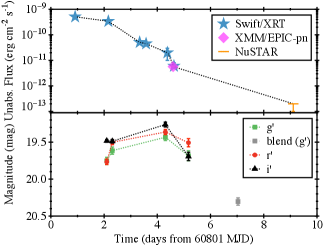
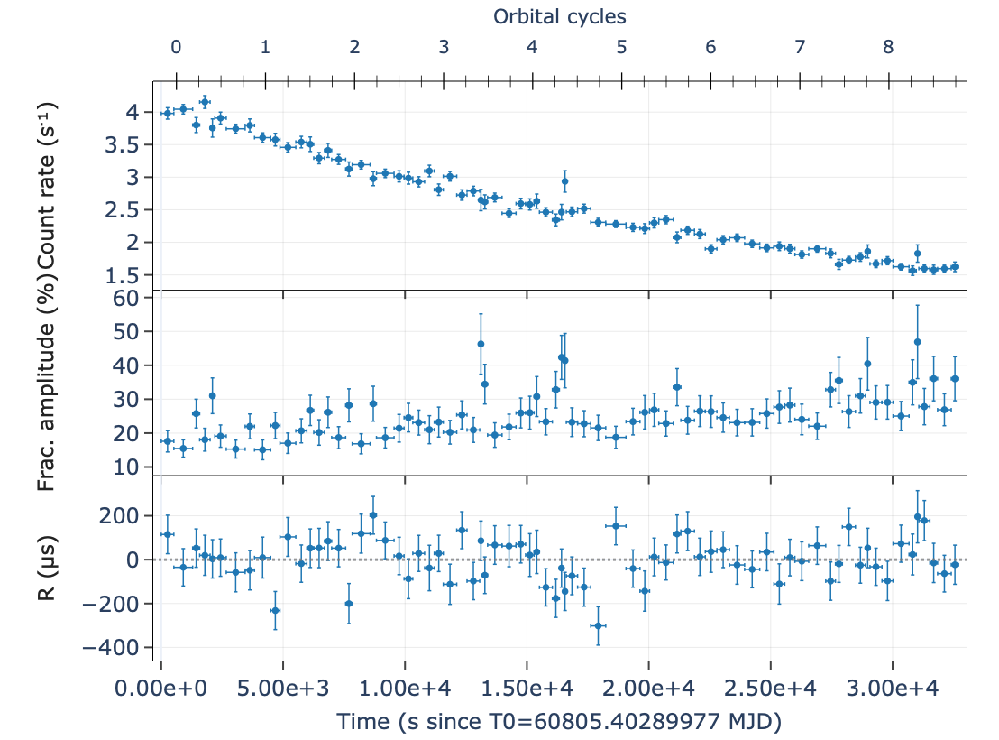
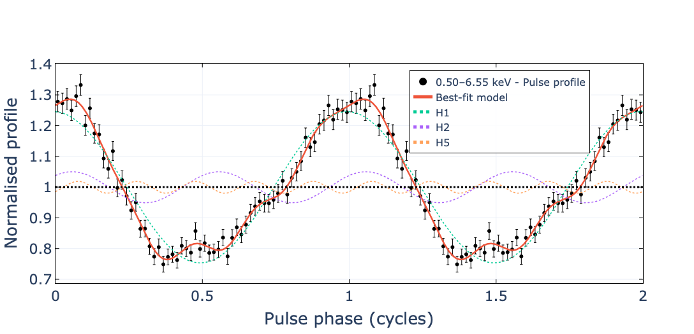
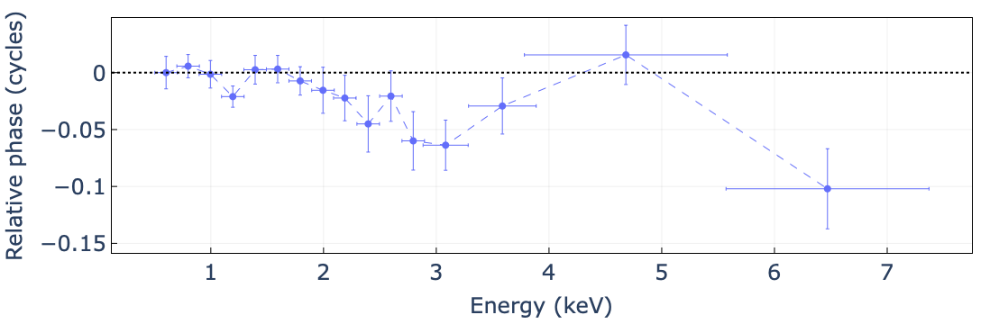
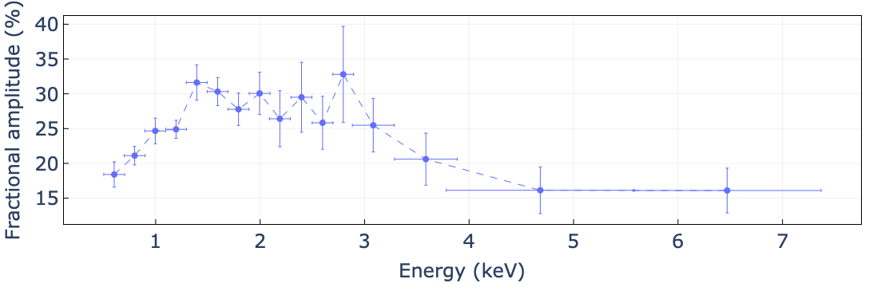
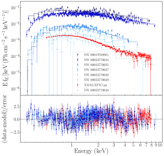
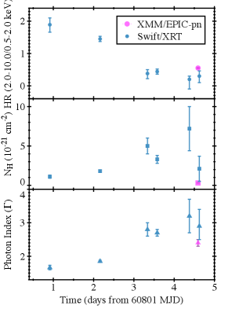
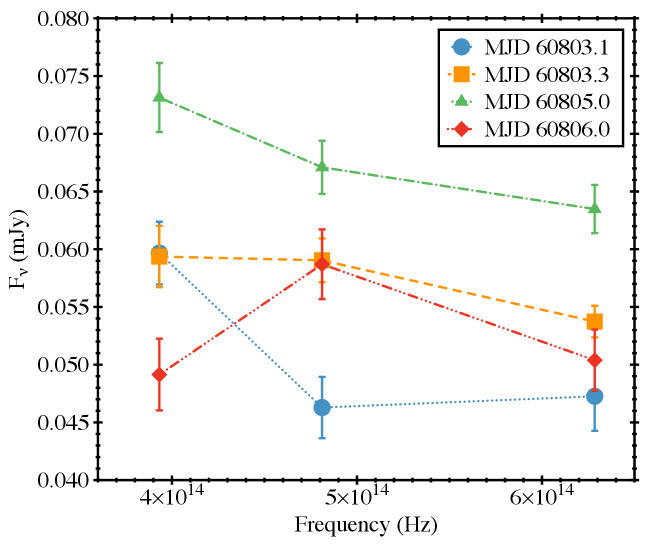
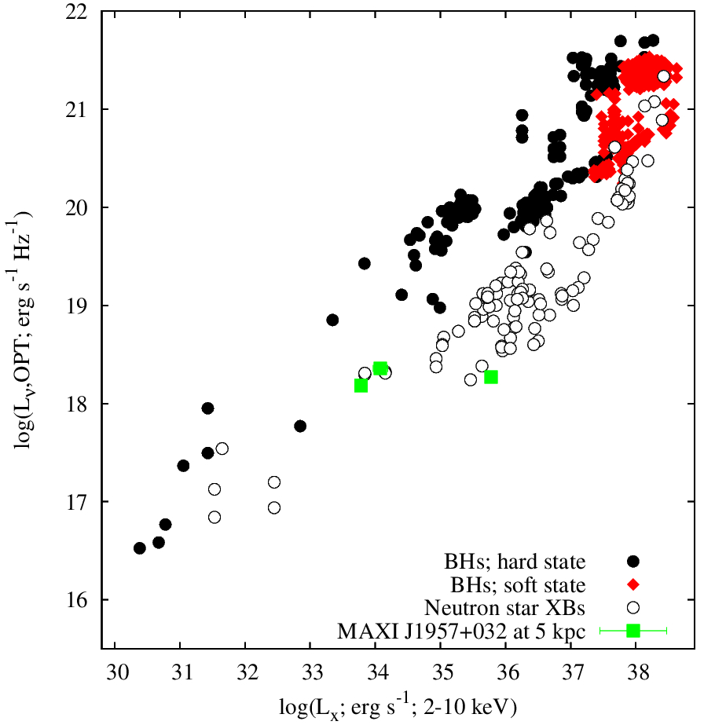
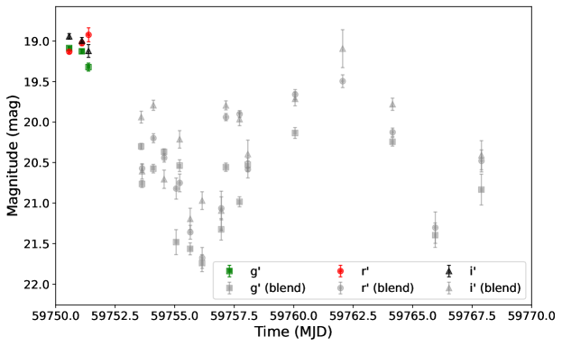

11email: andrea.sanna@dsf.unica.it 22institutetext: INAF-Osservatorio Astronomico di Brera, Via Bianchi 46, I-23807, Merate (LC), Italy 33institutetext: Center for Astrophysics and Space Science (CASS), New York University Abu Dhabi, PO Box 129188, Abu Dhabi, UAE 44institutetext: European Space Science (ESA), European Space Astronomy Center (ESAC), Camino Bajo del Castillo s/n, E-28692 Villanueva de la Cañada, Madrid 55institutetext: ASI - Agenzia Spaziale Italiana, Via del Politecnico snc, 00133 Roma, Italy 66institutetext: Institute of Space Sciences (ICE, CSIC), Campus UAB, Carrer de Can Magrans s/n, E-08193 Barcelona, Spain 77institutetext: Institut d’Estudis Espacials de Catalunya (IEEC), 08860 Castelldefels (Barcelona), Spain 88institutetext: INAF-IASF Palermo, Via Ugo La Malfa 153, 90146 Palermo, Italy 99institutetext: INAF-Osservatorio Astronomico di Roma, Via Frascati 33, I-00076 Monte Porzio Catone, (RM), Italy 1010institutetext: Dipartimento di Fisica e Chimica - Emilio Segre, Università di Palermo, via Archirafi 36 - 90123 Palermo, Italy 1111institutetext: Faulkes Telescope Project, School of Physics and Astronomy, Cardiff University, The Parade, Cardiff, CF24 3AA, Wales, UK 1212institutetext: The Schools’ Observatory, Astrophysics Research Institute, Liverpool John Moores University, 146 Brownlow Hill, Liverpool L3 5RF, UK 1313institutetext: South African Astronomical Observatory, P.O Box 9, Observatory, 7935 Cape Town, South Africa
وميض سريع: توصيف فورة 2025 لـ MAXI J1957+032
الملخص
Context. MAXI J1957+032 نجم نابض ملي-ثاني متراكم للأشعة السينية، يُظهر فورات قصيرة ومتكررة ضمن مدار فائق الانضغاط مدته h.
Aims. نوصّف خصائص التوقيت بالأشعة السينية، والخصائص الطيفية والبصرية، خلال فورة 2025، ونقيس تطور الدوران طويل الأمد مقارنة بفورته السابقة في 2022.
Methods. حللنا أرصاد الأشعة السينية من XMM-Newton وSwift وNuSTAR، إلى جانب قياسات ضوئية بصرية متزامنة حصلنا عليها باستخدام LCO خلال فورة 2025. شمل تحليل توقيت الأشعة السينية الطيّ الحقبي القياسي وعمليات البحث المتماسكة، في حين دُرست أشكال النبضات المحلولة طاقيًا عبر التفكيك التوافقي. استخدمت الملاءمات الطيفية نماذج كومبتنة حرارية ممتصة مع مكوّن جسم أسود لين، ويشير نصف قطر انبعاثه إلى أنه ينشأ على الأرجح من بقعة ساخنة على سطح النجم النيوتروني.
Results. كُشفت نبضات متماسكة عند Hz، من دون مشتقة تردد قابلة للقياس ضمن تعريض XMM-Newton.
وبالمقارنة مع فورة 2022، نجد تباطؤًا دورانيًا طويل الأمد مقداره Hz s-1، متسقًا مع كبح ثنائي القطب المغناطيسي أثناء السكون.
شكل النبضة شبه جيبي، مع قدرة معنوية عند التوافقي الأساسي والثاني والخامس.
تنخفض السعة الكسرية مع ازدياد الفيض، وتُظهر تأخرات لينة تمتد إلى بضعة keV.
يُعاد إنتاج طيف الأشعة السينية بين 0.5 و 10 keV جيدًا بسلسلة متصلة مكومبتنة حراريًا ذات معامل فوتوني ، إضافة إلى جسم أسود بارد بدرجة keV.
لم تُرصد سمات انعكاس أو خطوط Fe.
وبافتراض ، ينحصر المجال المغناطيسي في المجال – G لمسافة kpc ومعامل اقتطاع  –، وهو أقل من الحد الأعلى الذي يقتضيه تباطؤ الدوران طويل الأمد (
–، وهو أقل من الحد الأعلى الذي يقتضيه تباطؤ الدوران طويل الأمد ( G)، وربما يشير ذلك إلى نظام مروحة متسرب تسربًا طفيفًا.
يتبع الانبعاث البصري فرع النجوم النيوترونية في علاقة –
G)، وربما يشير ذلك إلى نظام مروحة متسرب تسربًا طفيفًا.
يتبع الانبعاث البصري فرع النجوم النيوترونية في علاقة – ، بما يتفق مع إعادة معالجة الأشعة السينية في قرص تراكم مدمج.
وتبدو توزيعات الطاقة الطيفية البصرية مسطحة عمومًا، ما يدعم انبعاثًا قرصيًا يهيمن عليه التشعيع، في حين يشير فائض أحمر مبكر إلى مساهمة نفاثة خلال الطور الأولي القاسي للأشعة السينية.
وقد تعكس الذروة البصرية المتأخرة بالنسبة إلى الأشعة السينية انتشار جبهة تسخين إلى الخارج عبر القرص، بما ينسجم مع تطور قرصي سريع في الفورات القصيرة العمر.
، بما يتفق مع إعادة معالجة الأشعة السينية في قرص تراكم مدمج.
وتبدو توزيعات الطاقة الطيفية البصرية مسطحة عمومًا، ما يدعم انبعاثًا قرصيًا يهيمن عليه التشعيع، في حين يشير فائض أحمر مبكر إلى مساهمة نفاثة خلال الطور الأولي القاسي للأشعة السينية.
وقد تعكس الذروة البصرية المتأخرة بالنسبة إلى الأشعة السينية انتشار جبهة تسخين إلى الخارج عبر القرص، بما ينسجم مع تطور قرصي سريع في الفورات القصيرة العمر.
Key Words.:
التراكم – النجوم النيوترونية – النجوم النابضة: عامة – الأشعة السينية: الثنائيات – الأشعة السينية: أجرام منفردة: MAXI J1957 032
032
1 مقدمة
تدين النجوم النيوترونية (NSs) الموجودة في ثنائيات الأشعة السينية منخفضة الكتلة (LMXBs) بفتراتها الدورانية السريعة النموذجية، أي من رتبة المللي ثانية، إلى تراكم طويل الأمد للزخم الزاوي من رفيق لا يكاد يبلغ مقياس الكتلة الشمسية (Alpar82; Wijnands:1998vk). يستقر الغاز المتدفق عبر نقطة لاغرانج الداخلية في قرص كبلري (مثلًا Shakura73; Frank02). وما إن تُوجَّه الجريان مغناطيسيًا نحو سطح النجم النيوتروني (Ghosh:1979aa; Ghosh:1979ws) حتى تمر البقع الساخنة عبر خط رؤيتنا، فتطبع نبضات أشعة سينية بترددات تبلغ مئات الهرتز (انظر، مثلًا، Psaltis99; Poutanen:2006aa). وقد تنبأت النماذج بهذه الأجرام المتراكمة «المعاد تدويرها» قبل أربعة عقود ورُصدت بعد ذلك بقليل؛ وهي تعد اليوم بضع عشرات (انظر Di-Salvo:2020va; Patruno:2021vs, لمراجعات موسعة)، وتصل تطوريًا بين ثنائيات LMXB غير النابضة (التي لم تُكتشف فيها حتى الآن نبضات ملي-ثانية متماسكة) والنجوم النابضة الراديوية الملي-ثانية.
تُعد العابريّة سمة أساسية في فئة النجوم النابضة الملي-ثانية المتراكمة للأشعة السينية (AMXPs) (انظر، مثلًا، Wijnands:1998vk; Campana2018a). ففي أحد السيناريوهات المحتملة يكون القرص في معظم الوقت أبرد وأقل كثافة من أن ينقل المادة إلى الداخل (Lasota01). ومع ذلك، قد يؤدي انفلات حراري لزج بين حين وآخر إلى تسخين الجريان ورفع معدل التراكم برتب مقدار عدة، ثم إشعال فورة في الأشعة السينية. وغالبًا ما تصاحب هذه الأحداث انبعاثات بصرية وتحت حمراء قريبة ناتجة من تشعيع الأشعة السينية لقرص التراكم، وأحيانًا للنجم الرفيق أيضًا (انظر، مثلًا، vanparadijs:1994aa; hynes:2005aa; russel:2006aa; russel:2007aa). وتوفر مراقبة هذا المكوّن منظورًا مكمّلًا لعملية التراكم، إذ يعكس الفيض البصري هندسة إعادة معالجة الأشعة السينية وكفاءتها معًا. في الصورة القياسية لعدم استقرار القرص (Meyer:1981aa; King:1998aa; Hameury:2020aa)، يمكن أن تستمر الفورات أسابيع إلى أشهر، غير أن النظرية تتنبأ أيضًا بحلقات أقصر بكثير إذا كان قرص التراكم ذا امتداد شعاعي صغير بوجه خاص، كما هو متوقع في الأنظمة فائقة الانضغاط (انظر، مثلًا، Hameury:2016aa; Marino:2019vq)، أو إذا كان مقتطعًا قرب الغلاف المغناطيسي (انظر، مثلًا، Burderi98b; Kulkarni:2013tf; Bozzo:2018aa). وتشير محاكاة الثنائيات فائقة الانضغاط الفقيرة بالهيدروجين إلى أن دورات الفوران قد تفرغ كامل الخزان خلال أيام قليلة فقط، وهو توقع تدعمه أرصاد عدة AMXPs (انظر، مثلًا، Hameury:2016aa; Marino:2019vq; heinke:2025aa). وتبين الدراسات الإحصائية أن معدل تكرار الفورات، وبدرجة أقل مدتها، يعتمد على الفترة المدارية، بما يعكس اختلافات حجم القرص وانتقال الكتلة عبر LMXBs. وعلى وجه الخصوص، تميل الأنظمة ذات h إلى إظهار معدلات فوران أدنى بكثير من الأنظمة الأطول فترة (Lin:2019aa). غير أن هذا الاتجاه لا يبدو قائمًا داخل الفئة الفرعية AMXPs، التي تشغل نظام الفترات القصيرة (عادة h) ولا تُظهر ارتباطًا واضحًا بين الفترة المدارية وتكرار الفورات. ومن المرجح أن أقراص التراكم المدمجة في هذه الأنظمة ومعدلات انتقال الكتلة المنخفضة تنتج فورات نادرة وغير منتظمة، ما يجعلها جمهرة رصدية مميزة ضمن عائلة LMXB الأوسع. وعلى الرغم من أن AMXPs لا تُصنَّف عادة ضمن عابرات الأشعة السينية الخافتة جدًا (VFXTs)، فإن لمعانات فوراتها المنخفضة تتداخل مع النظام – erg s-1 حيث تُظهر VFXTs ذات النجوم النيوترونية اتجاهات تليّن مشابهة (انظر، مثلًا، Wijnands:2015aa).
يقع MAXI J1957+032 عند الطرف الأشد في هذه الجمهرة الفرعية ذات «الفورات الومضية». فمنذ اكتشافه (Negoro:2015vw)، مر المصدر بنحو نصف دزينة من الفورات؛ وفي كل فورة ارتفع الفيض وبلغ ذروة عند erg s-1 (0.5–10 keV)، ثم خبا عائدًا إلى السكون خلال d عند قيم فيض قدرها بضعة erg s-1 (انظر، مثلًا، Ravi:2017tl; Mata-Sanchez:2017vl, والمراجع الواردة هناك). وتؤكد النبضات المتماسكة عند  314 Hz والفترة المدارية المزاحة بدوبلر والبالغة 1 h أن النظام نجم نابض ملي-ثاني متراكم فائق الانضغاط، ما يقتضي نصف قطر قرص لا يتجاوز بضعة cm ومانحًا منخفض الكتلة جدًا، قد يكون قزمًا بنيًا (Ng:2022uc; Sanna:2022vi) أو قزمًا أبيض كربونيًا-أكسجينيًا (Ravi:2017tl). وقد اتبعت الفورة الأحدث، التي كشفها تلسكوب Einstein Probe في 2025 مايو 6 (Sun:2025aa) وأكدها MAXI/GSC وSwift/XRT (Negoro:2025aa; Williams_2025ATel17172_Swift; Illiano_2025ATel17187)، القالب السريع نفسه مرة أخرى، إذ بالكاد بلغت بضعة
314 Hz والفترة المدارية المزاحة بدوبلر والبالغة 1 h أن النظام نجم نابض ملي-ثاني متراكم فائق الانضغاط، ما يقتضي نصف قطر قرص لا يتجاوز بضعة cm ومانحًا منخفض الكتلة جدًا، قد يكون قزمًا بنيًا (Ng:2022uc; Sanna:2022vi) أو قزمًا أبيض كربونيًا-أكسجينيًا (Ravi:2017tl). وقد اتبعت الفورة الأحدث، التي كشفها تلسكوب Einstein Probe في 2025 مايو 6 (Sun:2025aa) وأكدها MAXI/GSC وSwift/XRT (Negoro:2025aa; Williams_2025ATel17172_Swift; Illiano_2025ATel17187)، القالب السريع نفسه مرة أخرى، إذ بالكاد بلغت بضعة  erg s-1 قبل أن تهبط دون قابلية كشف أجهزة الرصد خلال أسبوع (Li:2025aa). وأكد تحليل التوقيت لبيانات Einstein Probe فورة جديدة للمصدر بكشف نبضات متماسكة عند تردد الدوران المتوقع والمذكور في الأدبيات (Li:2025aa). وتُعرض رؤية عريضة النطاق لفورة 2025، تجمع تغطية الأشعة السينية والتغطية البصرية، في الشكل 1.
erg s-1 قبل أن تهبط دون قابلية كشف أجهزة الرصد خلال أسبوع (Li:2025aa). وأكد تحليل التوقيت لبيانات Einstein Probe فورة جديدة للمصدر بكشف نبضات متماسكة عند تردد الدوران المتوقع والمذكور في الأدبيات (Li:2025aa). وتُعرض رؤية عريضة النطاق لفورة 2025، تجمع تغطية الأشعة السينية والتغطية البصرية، في الشكل 1.
نعرض هنا خصائص التوقيت والخصائص الطيفية لـ MAXI J1957+032 كما رُصدت باستخدام XMM-Newton خلال رصد مخصص من نوع هدف الفرصة في فورته الأحدث. ولتتبع التطور الطيفي، نستخدم أيضًا حملة رصد Swift/XRT، ونضمّن قياسًا ضوئيًا بصريًا أُنجز في الحقبة نفسها لدراسة سلوك قرص التراكم المشعَّع. وإضافة إلى بيانات XMM-Newton وSwift، أُخذ رصد NuSTAR بعد تسعة أيام من ذروة الفورة. وبما أن المصدر لم يُكشف كشفًا معنويًا في هذا التوجيه، ولم يكن ممكنًا استخراج قيود توقيتية أو طيفية مفيدة، فإن هذه البيانات لا تُستخدم في تحليلنا. وللاستكمال، يرد وصف الرصد وتقديرات معدل العد الأساسية في القسم 2.2.

 .
.2 الرصد واختزال البيانات
2.1 XMM-Newton
أجرى XMM-Newton (Jansen2001) رصدًا من نوع هدف الفرصة لـ MAXI J1957+032 (Obs. ID. 0971190201) في 2025 مايو 10، بدءًا من 08:43 UTC حتى 22:02 UTC. ضُبطت أدوات مختلفة للرصد، منها كاميرا EPIC-pn (PN)، التي شُغّلت في نمط التوقيت خلال أول ks ثم حُوّلت إلى نمط الفورة خلال ks المتبقية من التغطية. وشُغّلت كاميرتا EPIC-MOS (1–2) في نمط التوقيت، بينما كان RGS في نمط المطيافية. وعلى الرغم من إعداد كاميرتي EPIC-MOS في نمط التوقيت، لم نستخدم بيانات MOS في تحليل التوقيت بسبب محدودية المعايرة (انظر، مثلًا، valencic:2016aa) وتشتت التوقيت المطلق من رتبة ms (وفق تقديرات من تقاطعات تحقق باستخدام Crab). وفي هذا العمل ركزنا حصريًا على مجموعة بيانات PN المأخوذة في نمط التوقيت، مستبعدين فترة نمط الفورة لأن دورة العمل البالغة 3% لم تُبق إلا فوتونًا، وهو عدد قليل جدًا لتحليل طيفي أو توقيتي موثوق.
أجرينا فرز أحداث PN وتنقيتها باستخدام برنامج Science Analysis Software (SAS) v.21 وبملفات معايرة محدثة. واستخرجنا فوتونات المصدر محددين طاقتها في المجال 0.5–10 keV، مع الإبقاء فقط على الفوتونات المعايرة الموصوفة بـ PATTERN 4 و(FLAG = 0). عزلنا فوتونات المصدر والخلفية، على الترتيب، من شريط عرضه 23 بكسل (RAWX=26–48) متمركز على أسطع عمود بكسلات، ومن شريط عرضه 11 بكسل (RAWX=3–13) في ذيل توزيع RAWX. وبحثنا عن نشاط توهجي فوق 10 keV بتوليد منحنى ضوئي بدقة صناديق زمنية 20-s من أحداث PN في نمط التوقيت المستخرجة من المصدر، ولم نجد أي نشاط من هذا النوع. ومن مجموعة البيانات نفسها ولدنا منحنى الضوء 0.5–10 keV، الذي أظهر معدل عد وسطيًا يقارب 3 counts/s، مع اتجاه تنازلي واضح من إلى counts/s. ولم نرصد فورة أشعة سينية من النمط الأول ولا احتجابًا جزئيًا لمعدل عد المصدر خلال زمن تعريض PN. ولتحليل التوقيت طبقنا تصحيحات مركزية الكتلة على أزمنة وصول الفوتونات إلى مركز كتلة النظام الشمسي باستخدام أداة barycen (تقويم النظام الشمسي DE-405)، واعتمدنا أفضل إحداثيات متاحة للمصدر (Chakrabarty:2016vp) كما ترد في الجدول 1.
يُعرض منحنى الضوء PN الموصوف في هذا القسم، مع الرصد البصري، ضمن النظرة العامة متعددة الأطوال الموجية للفورة في الشكل 1.
2.2 NuSTAR
نفّذ NuSTAR رصدًا موجهًا لـ MAXI J1957+032 (Obs.ID. 91101312002)
بدأ في مايو 14، 2025، 13:45 UTC وانتهى في مايو 15، 2025، 15:25 UTC، بزمن تغطية كلي قدره  92.4 ks.
عالجنا رصد NuSTAR باستخدام خط المعالجة القياسي في NUSTARDAS (HEASOFT v6.33.2)، وطبقنا الفرز والترشيح الافتراضيين لإنتاج قوائم أحداث منظفة لوحدتي FPMA وFPMB. واستُخرجت أحداث المصدر والخلفية بفتحات دائرية متمركزة على الهدف وعلى منطقة خالية من المصادر في ربع الكاشف نفسه، على الترتيب؛ ثم وُلّدت منحنيات الضوء والأطياف (مع ملفات الاستجابة) باستخدام nuproducts. وحصلنا على منحنيات الضوء بعد طرح الخلفية لكل وحدة ولمجموعة البيانات المدمجة باستخدام lcmath.
92.4 ks.
عالجنا رصد NuSTAR باستخدام خط المعالجة القياسي في NUSTARDAS (HEASOFT v6.33.2)، وطبقنا الفرز والترشيح الافتراضيين لإنتاج قوائم أحداث منظفة لوحدتي FPMA وFPMB. واستُخرجت أحداث المصدر والخلفية بفتحات دائرية متمركزة على الهدف وعلى منطقة خالية من المصادر في ربع الكاشف نفسه، على الترتيب؛ ثم وُلّدت منحنيات الضوء والأطياف (مع ملفات الاستجابة) باستخدام nuproducts. وحصلنا على منحنيات الضوء بعد طرح الخلفية لكل وحدة ولمجموعة البيانات المدمجة باستخدام lcmath.
بلغ التعريض بعد الفرز  46 ks. وفي كامل نطاق 3–80 keV، نقيس مجموعًا قدره 2779 net counts عند جمع FPMA وFPMB، بما يقابل معدلًا وسطيًا بعد طرح الخلفية قدره counts/s (أي counts/s لكل وحدة).
46 ks. وفي كامل نطاق 3–80 keV، نقيس مجموعًا قدره 2779 net counts عند جمع FPMA وFPMB، بما يقابل معدلًا وسطيًا بعد طرح الخلفية قدره counts/s (أي counts/s لكل وحدة).
وباستخدام المعلمات الطيفية من أقرب رصد Swift/XRT، قدرنا فيض NuSTAR الموافق في النطاق 3–20 keV بواسطة WebPIMMS. ويبلغ الفيض المستنتج رتبة بضعة erg cm-2 s-1، كما يُعرض في الشكل 1، مؤكّدًا أن MAXI J1957+032 كان قد عاد بالفعل إلى السكون، ومن ثم لم يوفر قيودًا توقيتية أو طيفية مفيدة.
2.3 Swift
رصد Swift (Gehrels_2004ApJ)، بواسطة تلسكوب الأشعة السينية (XRT؛ Burrows_2005SSRv)، المصدر MAXI J1957+032 عشر مرات خلال فورته 2025 (انظر الجدول 3). أُجري رصد XRT الأول في نمط عد الفوتونات (PC) في 2025 مايو 6 (Williams_2025ATel17172_Swift)، مؤكّدًا بداية الفورة. ثم تبعته حملة رصد مخصصة بسلسلة أرصاد أُجريت كل ست ساعات تقريبًا في نمط التوقيت النافذي (WT) بين 2025 مايو 8 ومايو 11 (PI: Illiano)، لتتبّع تطور الفورة بوتيرة عالية. وأخيرًا، أُجري رصد أخير في نمط PC في 2025 مايو 15 لتأكيد عودة المصدر إلى السكون (Illiano_2025ATel17187).
عولجت البيانات الخام من المستوى 1 باستخدام xrtpipeline وبالمعلمات القياسية. وقد تأثر أول رصد في نمط PC (ObsID: 00019768001) بتراكب الفوتونات. ولتخفيف ذلك، استخرجنا فوتونات المصدر من منطقة حلقية متمركزة على إحداثيات المصدر بنصفي قطر داخلي وخارجي قدرهما 16 و30 بكسل، على الترتيب (1 بكسل = 2.36 ثانية قوسية). وقُدّرت الخلفية من منطقة حلقية متحدة المركز بنصفي قطر داخلي وخارجي قدرهما 40 و80 بكسل، على الترتيب. أما مجموعة الأرصاد اللاحقة، المنفذة في نمط WT، فحُللت باستخدام منطقة دائرية نصف قطرها 20 بكسل متمركزة على موضع المصدر لاستخراج فوتونات المصدر، ومنطقة خلفية بالحجم نفسه تقع بعيدًا عنه.
استُخرجت جميع الأطياف في مجال الطاقة 0.3–10 keV، وأعيد تجميعها لضمان حد أدنى قدره 25 counts لكل صندوق، باستثناء رصدين في نمط WT (ObsIDs: 00033770039 و00033770040) كانت إحصاءاتهما منخفضة وكان نطاقهما عالي الطاقة تهيمن عليه الخلفية. لذلك جُمعت هذه الأطياف بحيث تحتوي على 10 counts على الأقل لكل صندوق، وملئت باستخدام صيغة معدلة من إحصائية Cash تأخذ أثر الخلفية في الحسبان (W-statistic11 1 انظر https://heasarc.gsfc.nasa.gov/docs/software/xspec/manual/node119.html) في مجالي الطاقة 0.5–10 keV و0.5–9 keV، على الترتيب.
استُبعدت أطياف ObsIDs 00033770041 و00033770042 من التحليل لأن المصدر لم يُكشف في كلتا الحالتين إلا دون 3 keV، ما حال دون تحديد موثوق للمعلمات الطيفية. وحاولنا أيضًا دمج هذين الرصدين لتحسين الإحصاء، غير أن عوامل إعادة التطبيع الناتجة والمستخدمة في النمذجة الطيفية أظهرت عدم اتساق، كما هو متوقع نظرًا إلى طور الاضمحلال السريع للمصدر (انظر الشكل 1، اللوحة العلوية). وأخيرًا، لم نحلل آخر رصد في نمط PC لأن المصدر لم يعد مكتشفًا، بما ينسجم مع حالة السكون التي أبلغ عنها Illiano_2025ATel17187. وأعادت أداة sosta ومولد المنتجات الإلكتروني لـ Swift/XRT حدًا أعلى عند 3 لمعدل العد قدره
لمعدل العد قدره  counts/s في تعريض
counts/s في تعريض  1.8 ks. وبافتراض أحدث طيف وارد في الجدول 4، يقابل ذلك حدًا أعلى عند 3
1.8 ks. وبافتراض أحدث طيف وارد في الجدول 4، يقابل ذلك حدًا أعلى عند 3 لفيض 0.5–10 keV غير الممتص مقداره
لفيض 0.5–10 keV غير الممتص مقداره  erg cm-2 s-1.
erg cm-2 s-1.
يُعرض التطور الزمني لفيضات XRT غير الممتصة في الشكل 1.
2.4 Las Cumbres Observatory
رُصد MAXI J1957+032 خلال فورته 2025 في النطاق البصري باستخدام تلسكوبي 1 m و2 m ضمن شبكة Las Cumbres Observatory (LCO)، وذلك في إطار برنامج مستمر يرصد قرابة 50 من LMXBs (Lewis2008). وحُصل على الأرصاد بمرشحات SDSS و و و ، ابتداءً من 2025 مايو 6 (MJD 60803)، أي بعد نحو يوم من أول كشف في الأشعة السينية، واستمرت حتى 2025 مايو 30. يقع الهدف ضمن
، ابتداءً من 2025 مايو 6 (MJD 60803)، أي بعد نحو يوم من أول كشف في الأشعة السينية، واستمرت حتى 2025 مايو 30. يقع الهدف ضمن  2” من نجم قريب ذي mag وتبعًا لظروف الرؤية وسطوع MAXI J1957+032 وقت الرصد، كان المصدران يبدوان أحيانًا ممتزجين جزئيًا. وعندما كان العابر ساطعًا، قرب ذروة الفورة، أمكن فصله بوضوح وقياسه بدقة. أما في المراحل الأخفت، ولا سيما في ظروف رؤية رديئة، فقد تعذر تمييز الجسمين، وحُددت كل هذه الصور بالفحص البصري واستُبعدت من التحليل. ونظرًا إلى قصر مدة الفورة، أصبح MAXI J1957+032 أخفت من أن يُفصل بوضوح عن النجم القريب بعد نحو ثلاثة أيام فقط من الرصد البصري. لذلك يركز هذا العمل أساسًا على الأرصاد البصرية المكتسبة بين 2025 مايو 8 ومايو 11 (MJD 60803–60806). وقد أُخذت جميع الأرصاد خلال هذه الفترة بتلسكوبات 1 m في شبكة LCO.
2” من نجم قريب ذي mag وتبعًا لظروف الرؤية وسطوع MAXI J1957+032 وقت الرصد، كان المصدران يبدوان أحيانًا ممتزجين جزئيًا. وعندما كان العابر ساطعًا، قرب ذروة الفورة، أمكن فصله بوضوح وقياسه بدقة. أما في المراحل الأخفت، ولا سيما في ظروف رؤية رديئة، فقد تعذر تمييز الجسمين، وحُددت كل هذه الصور بالفحص البصري واستُبعدت من التحليل. ونظرًا إلى قصر مدة الفورة، أصبح MAXI J1957+032 أخفت من أن يُفصل بوضوح عن النجم القريب بعد نحو ثلاثة أيام فقط من الرصد البصري. لذلك يركز هذا العمل أساسًا على الأرصاد البصرية المكتسبة بين 2025 مايو 8 ومايو 11 (MJD 60803–60806). وقد أُخذت جميع الأرصاد خلال هذه الفترة بتلسكوبات 1 m في شبكة LCO.
لم تُجمع إطارات نطاق  إلا عندما كان المصدر ممتزجًا أو خافتًا جدًا، بينما أعطت بيانات نطاق
إلا عندما كان المصدر ممتزجًا أو خافتًا جدًا، بينما أعطت بيانات نطاق  حدودًا عليا في الحقب غير الممتزجة. وبناء على ذلك، نقصر تحليلنا على النطاقات و و. واستُخرج القياس الضوئي بخط معالجة XB-NEWS (Russell2019; Goodwin2020)، الذي ينفذ قياسًا ضوئيًا متعدد الفتحات (MAP; Stetson90) ومعايرة فلكية وضوئية آليتين. وترد تفاصيل الاختزال وإجراء المعايرة والمقادير النهائية في الملحق B (انظر الجدول 5).
حدودًا عليا في الحقب غير الممتزجة. وبناء على ذلك، نقصر تحليلنا على النطاقات و و. واستُخرج القياس الضوئي بخط معالجة XB-NEWS (Russell2019; Goodwin2020)، الذي ينفذ قياسًا ضوئيًا متعدد الفتحات (MAP; Stetson90) ومعايرة فلكية وضوئية آليتين. وترد تفاصيل الاختزال وإجراء المعايرة والمقادير النهائية في الملحق B (انظر الجدول 5).
تُعرض منحنيات الضوء البصرية الناتجة مع تطور الأشعة السينية في الشكل 1.
3 النتائج
3.1 تحليل التوقيت
صُححت جميع أزمنة وصول الفوتونات من كاميرا PN إلى مركز كتلة النظام الشمسي باستخدام barycen، ثم صُححت للحركة الثنائية بافتراض مدار دائري. ونقلنا الحل المداري من فورة NICER في 2022 (Sanna:2022vi) إلى الحقبة الحالية، ومسحنا زمن العقدة الصاعدة ضمن مجاله  بخطوات 1-s.
بخطوات 1-s.
في كل تجربة، صُححت أزمنة وصول الفوتونات أولًا إلى مركز كتلة النظام الشمسي باستخدام barycen، وهو ما يزيل التأخيرات الناتجة من حركة الأرض. ثم طبقنا إزالة تشكيل مدارية بطرح تأخير رومر المتوقع من مدار ثنائي دائري. وبعد هذا الإجراء ذي الخطوتين طُويت الأحداث في 32 صندوقًا طوريًا مع مسح تردد الدوران حول القيمة 2022 ( Hz) بزيادات قدرها Hz. وأعطى مخطط الدوري ذروة معنوية وحيدة عند MJD و Hz. وقُدّر لايقين التردد من تقوس ذروة ومن إعادة أخذ عينات تمهيدية لقائمة الفوتونات، فأعطت الطريقتان نتائج متسقة ضمن 2%.
وباستخدام الحل المداري الأمثل وتردد الدوران الناتجين من بحث الطي، أجرينا تحليلًا متماسكًا طوريًا بالكامل لأحداث PN. ولتجنب خلط فواصل ذات نسب إشارة إلى ضوضاء (S/N) شديدة الاختلاف، قسمنا الرصد أولًا إلى مقاطع متجاورة اختيرت باختبار H متعدد التوافقيات (deJager:1989aa; dejager:2010aa). قُيّم الاختبار على أطوار فوتونية غير مبوبة حتى توافقيات، واحتفظنا فقط بالفواصل التي تتجاوز معنويتها في تجربة واحدة . وأسفر هذا الإجراء عن 73 مقطعًا تغطي ks (99.6% من التعريض الجيد)، بمدة وسطية 445 s وعدد وسطي فوتونًا لكل مقطع. وتبلغ إحصائية H الوسطية 36.3. ويتغير الرتبة التوافقية التي تعظم اختبار H تغيرًا طفيفًا عبر الرصد؛ فمعظم المقاطع متسقة مع إشارة مقتصرة على التوافقي الأساسي أو مع مساهمة محدودة من التوافقي الثاني، ما يدل على تطور محدود لشكل النبضة وعلى شكل يهيمن عليه التوافقي الأساسي. كما يبين تقييم كل توافقي على حدة بإحصائية غير المبوبة (2 درجات حرية؛ d.o.f. فيما يلي) أن التوافقي الثاني ولا التوافقيات الأعلى لا تكون معنوية فرديًا عند في أي مقطع، ومن ثم فإن الإشارة على مستوى المقاطع تحملها الغالبية الساحقة من التوافقي الأساسي.
في كل مقطع صالح، حُصل على طور النبضة بتعظيم إحصائية الدورية غير المبوبة بالنسبة إلى إزاحة طور بسيطة، مع اعتماد عدد التوافقيات نفسه، ، الذي يعظم اختبار H (Buccheri:1993aa). وقيس الطور بالنسبة إلى قالب عالي S/N بُني من مجموعة البيانات كلها، ومُثل كسلسلة فورييه مقطوعة ذات معاملات (). ولكل مقطع حسبنا معاملات فورييه المركبة من أطوار الفوتونات وحددنا الإزاحة التي تعظم ارتباطها بالقالب. وهذا الإجراء مكافئ رياضيًا لترابط متبادل غير مبوب في فضاء الطور، مطبق في الوقت نفسه على جميع التوافقيات. واشتُق اللايقين الإحصائي لكل طور من إعادة أخذ عينات تمهيدية لا معلمية () لقائمة الفوتونات مع الحفاظ على دورية الإشارة. وعُرّف خطأ على أنه الانحراف المعياري الدائري لتوزيع الأطوار المستردة. وأجرينا أيضًا، لمجموعة فرعية من المقاطع، تمهيدًا معلميًا قائمًا على قوائم فوتونية محاكاة مسحوبة من قالب فورييه؛ واتفق التشتت الناتج ضمن بضعة في المئة مع الأخطاء اللامعلمية، مما يدعم موثوقية التقديرات المعتمدة.
لُوئمت مجموعة أطوار النبض الناتجة بنموذج توقيت صغير الشذوذ باستخدام تقنيات قياسية متماسكة طوريًا (انظر، مثلًا، Burderi:2007tl; Sanna:2016ty). وبدأنا من حل الطي ( MJD و
MJD و Hz)، سامحين بتصحيحات تفاضلية لجميع معلمات النموذج. وتكرر الطي واستخراج الطور والملاءمة الموزونة إلى أن أصبحت تحديثات المعلمات مهملة بالنسبة إلى لايقينياتها الشكلية. وترد أفضل المعلمات الناتجة من التحليل المتماسك في الجدول 1. وكما هو معتاد في AMXPs، اعتمدنا أخطاء معلمات مضخمة بمقدار
Hz)، سامحين بتصحيحات تفاضلية لجميع معلمات النموذج. وتكرر الطي واستخراج الطور والملاءمة الموزونة إلى أن أصبحت تحديثات المعلمات مهملة بالنسبة إلى لايقينياتها الشكلية. وترد أفضل المعلمات الناتجة من التحليل المتماسك في الجدول 1. وكما هو معتاد في AMXPs، اعتمدنا أخطاء معلمات مضخمة بمقدار  لأخذ أي ضوضاء طورية متبقية لا تلتقطها اللايقينيات الإحصائية في الحسبان (Finger:1999vb). وأضفنا أيضًا، تربيعيًا، المساهمة النظامية في لايقين تردد الدوران الناتجة من موضع المصدر، وفق المعادلة (4) في Papitto:2011uv. وبالنسبة إلى قياسنا الفلكي يبلغ هذا الحد Hz ويزيد خطأ
لأخذ أي ضوضاء طورية متبقية لا تلتقطها اللايقينيات الإحصائية في الحسبان (Finger:1999vb). وأضفنا أيضًا، تربيعيًا، المساهمة النظامية في لايقين تردد الدوران الناتجة من موضع المصدر، وفق المعادلة (4) في Papitto:2011uv. وبالنسبة إلى قياسنا الفلكي يبلغ هذا الحد Hz ويزيد خطأ  الكلي بمقدار
الكلي بمقدار  .
.
لا تُظهر بواقي الطور بعد الملاءمة لكل مقطع مختار باختبار H انجرافًا منهجيًا طويل الأمد خلال الرصد (الشكل 2، اللوحة السفلية). كما أن تشتتها متسق إحصائيًا مع الملاءمة المتماسكة الموزونة (الجدول 1)، ولا تؤدي زيادة النموذج بمشتقة لتردد الدوران  أو بمشتقة للفترة المدارية إلى تحسن معنوي. يظهر انحراف محدود في البواقي قرب منتصف التعريض؛ غير أن الطور يعود سريعًا إلى مستوى ما قبل الانحراف، ولا تتطلب البيانات خطوة مستمرة. وفي المقابل، رُصدت أثناء حملة NICER في 2022 (انظر الشكل 1 في Sanna:2022vi) قفزة طورية منفصلة حول MJD 59750.2 استمرت لاحقًا. ومن ثم، فعلى المقياس الزمني
أو بمشتقة للفترة المدارية إلى تحسن معنوي. يظهر انحراف محدود في البواقي قرب منتصف التعريض؛ غير أن الطور يعود سريعًا إلى مستوى ما قبل الانحراف، ولا تتطلب البيانات خطوة مستمرة. وفي المقابل، رُصدت أثناء حملة NICER في 2022 (انظر الشكل 1 في Sanna:2022vi) قفزة طورية منفصلة حول MJD 59750.2 استمرت لاحقًا. ومن ثم، فعلى المقياس الزمني  33 ks الذي يغطيه رصد XMM-Newton/EPIC-pn، يتسق سلوك التوقيت مع مدار دائري وتردد دوران ثابت ضمن حساسيتنا.
33 ks الذي يغطيه رصد XMM-Newton/EPIC-pn، يتسق سلوك التوقيت مع مدار دائري وتردد دوران ثابت ضمن حساسيتنا.
ولقياس قوة النبض في كل فاصل، حاذينا الأحداث طوريًا مع الحل المتماسك. ولائمنا الشكل المبوب المعيّر بالمتوسط بنموذج توافقي عند الرتبة المثلى للمقطع  . واعتبرنا سعة التوافقي الأساسي هي السعة الكسرية للفاصل، وقدرنا لايقينها
. واعتبرنا سعة التوافقي الأساسي هي السعة الكسرية للفاصل، وقدرنا لايقينها  بتمهيد فوتوني. وتزداد السعة الكسرية تدريجيًا مع انخفاض فيض المصدر (الشكل 2، اللوحة الوسطى)، بما يتفق مع الاتجاه المبلغ عنه في الفورة السابقة (Sanna:2022vi) ومع ما يُرى عادة في AMXPs (مثلًا Bult:2019tr; Bult:2022vn; Sanna:2022tt; Illiano:2023aa; Ballocco_2025arXiv). أما التوافقيات الأعلى فليست معنوية فرديًا عند في تحليل
بتمهيد فوتوني. وتزداد السعة الكسرية تدريجيًا مع انخفاض فيض المصدر (الشكل 2، اللوحة الوسطى)، بما يتفق مع الاتجاه المبلغ عنه في الفورة السابقة (Sanna:2022vi) ومع ما يُرى عادة في AMXPs (مثلًا Bult:2019tr; Bult:2022vn; Sanna:2022tt; Illiano:2023aa; Ballocco_2025arXiv). أما التوافقيات الأعلى فليست معنوية فرديًا عند في تحليل  المقطعي، ما يشير إلى أن التغير المرصود على المقاييس الزمنية القصيرة يعكس إعادة تحجيم عامة لشكل يهيمن عليه التوافقي الأساسي، لا تغيرًا جوهريًا في شكل النبضة.
المقطعي، ما يشير إلى أن التغير المرصود على المقاييس الزمنية القصيرة يعكس إعادة تحجيم عامة لشكل يهيمن عليه التوافقي الأساسي، لا تغيرًا جوهريًا في شكل النبضة.
| 2025 | |
|---|---|
| Parameters | XMM-Newton |
| R.A. (J2000) | 19h56m39.11s 0.02s |
| DEC. (J2000) | 03∘26’43.7” 0.28” |
| (s) | 3653.21(24) |
| (lt-s) | 0.013828(18) |
| (MJD/TDB) | 60805.367834(16) |
| Eccentricity | (3 c.l.) |
| (MJD/TDB) | 60805.4 |
| (Hz) | 313.64373844(34) |
| /dof | 1.33/66 |
 . الأخطاء
. الأخطاء  ومضروبة في ؛ وتُضاف النظامية الموضعية على
ومضروبة في ؛ وتُضاف النظامية الموضعية على  تربيعيًا وتساهم بمقدار . موضع المصدر من Chakrabarty:2016vp
تربيعيًا وتساهم بمقدار . موضع المصدر من Chakrabarty:2016vp
وباستخدام أفضل تقويم فلكي، صححنا أزمنة الفوتونات وأنتجنا شكل النبضة المتوسط. ولتعظيم S/N، مسحنا اختيارات الطاقة بتجزئة يقودها اختبار H، واعتمدنا النطاق keV بوصفه المجال الأمثل. الشكل المعيّر بالمتوسط أملس وتغلب عليه بوضوح التوافقية الأساسية (H1). ويعطي اختبار H غير المبوب ، لكن التوافقيات الأول والثاني (H2)، والخامس (H5) وحدها تكون معنوية فرديًا، في حين تكون المكونات الباقية متسقة مع الصفر. وتعيد ملاءمة مربعات صغرى موزونة للشكل المبوب إنتاج البنية جيدًا، مع تفسير التوافقي الثاني للا تماثل الموجة الطفيف.
ولتوصيف الاعتماد على الطاقة، قسمنا الطيف إلى 16 نطاقات محسنة الدلالة
بين  و keV (يتجاوز كل منها عتبة اختيار ثابتة قدرها
و keV (يتجاوز كل منها عتبة اختيار ثابتة قدرها  ). وفي جميع النطاقات، تُوصف الإشارة على نحو كاف بدالة جيبية صرفة (). ومن أفضل نموذج ملائم، قسنا قيم الطور والسعة الكسرية الموافقة. ويُظهر الشكل 4a لطور النبضة اتجاه تأخر لين معنويًا مع الطاقة: إذ يحسن نموذج خطي الوصف مقارنة بثابت بمقدار لدرجة حرية واحدة ()، وبميل دورة keV-1 (نسبة إلى النطاق المرجعي)، مع إشارة إلى انقلاب فوق
). وفي جميع النطاقات، تُوصف الإشارة على نحو كاف بدالة جيبية صرفة (). ومن أفضل نموذج ملائم، قسنا قيم الطور والسعة الكسرية الموافقة. ويُظهر الشكل 4a لطور النبضة اتجاه تأخر لين معنويًا مع الطاقة: إذ يحسن نموذج خطي الوصف مقارنة بثابت بمقدار لدرجة حرية واحدة ()، وبميل دورة keV-1 (نسبة إلى النطاق المرجعي)، مع إشارة إلى انقلاب فوق  3-4 keV حيث تكبر الأخطاء. ويبيّن الشكل 4b أن السعة الكسرية ترتفع من
3-4 keV حيث تكبر الأخطاء. ويبيّن الشكل 4b أن السعة الكسرية ترتفع من  18-25% دون 1 keV إلى
18-25% دون 1 keV إلى  30-33% عند 1.3-2.0 keV، ثم تنخفض فوق
30-33% عند 1.3-2.0 keV، ثم تنخفض فوق  3 keV إلى
3 keV إلى  16% عند 4.5-7.5 keV. ولا يقدم اتجاه خطي تحسنًا معنويًا على الثابت ( لدرجة حرية واحدة، واحتمال الفرضية الصفرية )، بما يتسق مع الشكل غير الرتيب.
16% عند 4.5-7.5 keV. ولا يقدم اتجاه خطي تحسنًا معنويًا على الثابت ( لدرجة حرية واحدة، واحتمال الفرضية الصفرية )، بما يتسق مع الشكل غير الرتيب.

 من التمهيد الفوتوني.
اللوحة السفلية: بواقي طور النبضة بالنسبة إلى أفضل نموذج توقيت متماسك (الجدول 1)؛ ويشير الخط الرمادي المتقطع إلى الباقي الصفري.
يُقاس الزمن من MJD (TDB)، ويُظهر المحور الأفقي في الأعلى الطور المداري الموافق خلال الرصد.
من التمهيد الفوتوني.
اللوحة السفلية: بواقي طور النبضة بالنسبة إلى أفضل نموذج توقيت متماسك (الجدول 1)؛ ويشير الخط الرمادي المتقطع إلى الباقي الصفري.
يُقاس الزمن من MJD (TDB)، ويُظهر المحور الأفقي في الأعلى الطور المداري الموافق خلال الرصد.
 ) الشكل المعيّر بالمتوسط والمكوّن من 64 صندوقًا، مرسومًا على دورتين.
ويمثل الخط المتصل ملاءمة المربعات الصغرى الموزونة عند الرتبة المختارة باختبار H (
) الشكل المعيّر بالمتوسط والمكوّن من 64 صندوقًا، مرسومًا على دورتين.
ويمثل الخط المتصل ملاءمة المربعات الصغرى الموزونة عند الرتبة المختارة باختبار H ( )؛
وتعرض المنحنيات المنقطة المكونات التوافقية المعنوية فرديًا (H1, H2, H5).
)؛
وتعرض المنحنيات المنقطة المكونات التوافقية المعنوية فرديًا (H1, H2, H5).

3.2 التحليل الطيفي
أجرينا التحليل الطيفي للأشعة السينية لبيانات XMM-Newton وSwift باستخدام حزمة ملاءمة الأطياف في الأشعة السينية XSPEC (Arnaud96) بالإصدار 12.14.1. واعتمدنا وفرة الوسط بين النجمي وجداول المقاطع العرضية من Wilms00 وVerner96، على الترتيب. وتُعطى جميع لايقينيات المعلمات الطيفية عند مستوى ثقة 1 .
.
3.2.1 مطيافية XMM-Newton
استخرجنا طيف PN بحد أدنى قدره 25 counts في كل قناة. وحصرنا التحليل الطيفي في النطاق 0.5−8 keV، إذ تهيمن الخلفية خارج هذا المجال.
لائمنا الطيف أولًا بنموذج قانون قدرة ممتص (TBabs * powerlaw)، فأعطى  = 213.27 لـ 128 d.o.f.. غير أن AMXPs في الفورة توصف عادة بانبعاث مكومبتن حراريًا (مثلًا DiSalvo_2023hxga.book)، لذلك استبدلنا مكوّن قانون القدرة بنموذج الالتفاف thcomp (Zdziarski_2020MNRAS) مطبقًا على مكوّن جسم أسود (TBabs * (thcomp * bbodyrad)؛ انظر الطيف الأحمر في الشكل 5).
ونظرًا إلى غياب التغطية الطيفية فوق 10 keV، ثبتنا درجة حرارة الإلكترونات، ، عند 30 keV، بما يتسق مع مجال القيم التي وُجدت أثناء فورة 2022 في Sanna:2022vi.
وقد حسّن هذا النموذج المنقح الملاءمة تحسنًا معنويًا، معطيًا قيمة نهائية
لـ 126 درجات حرية (تحسن قدره مع معلمتين حرتين أقل مقارنة بنموذج قانون القدرة). وترد أفضل المعلمات الناتجة في الجدول 2. وقد قُدّر الفيض غير الممتص في النطاق 0.5−10 keV، ، بإدراج المكوّن cflux. وفي سياق تطور الفورة الكامل، يتسق طيف EPIC-pn مع اتجاه التليّن المرئي في بيانات Swift/XRT (القسم 3.2.2)، إذ يُظهر سلسلة متصلة مكومبتنة شديدة الميل نسبيًا ومكوّن جسم أسود أبرد نسبيًا، كما يُرصد عادة في AMXPs أثناء اضمحلال الفورات.
= 213.27 لـ 128 d.o.f.. غير أن AMXPs في الفورة توصف عادة بانبعاث مكومبتن حراريًا (مثلًا DiSalvo_2023hxga.book)، لذلك استبدلنا مكوّن قانون القدرة بنموذج الالتفاف thcomp (Zdziarski_2020MNRAS) مطبقًا على مكوّن جسم أسود (TBabs * (thcomp * bbodyrad)؛ انظر الطيف الأحمر في الشكل 5).
ونظرًا إلى غياب التغطية الطيفية فوق 10 keV، ثبتنا درجة حرارة الإلكترونات، ، عند 30 keV، بما يتسق مع مجال القيم التي وُجدت أثناء فورة 2022 في Sanna:2022vi.
وقد حسّن هذا النموذج المنقح الملاءمة تحسنًا معنويًا، معطيًا قيمة نهائية
لـ 126 درجات حرية (تحسن قدره مع معلمتين حرتين أقل مقارنة بنموذج قانون القدرة). وترد أفضل المعلمات الناتجة في الجدول 2. وقد قُدّر الفيض غير الممتص في النطاق 0.5−10 keV، ، بإدراج المكوّن cflux. وفي سياق تطور الفورة الكامل، يتسق طيف EPIC-pn مع اتجاه التليّن المرئي في بيانات Swift/XRT (القسم 3.2.2)، إذ يُظهر سلسلة متصلة مكومبتنة شديدة الميل نسبيًا ومكوّن جسم أسود أبرد نسبيًا، كما يُرصد عادة في AMXPs أثناء اضمحلال الفورات.
نظرًا إلى أن طيف الانعكاس، ولا سيما مركّب الحديد K ، يُرصد غالبًا في AMXPs أثناء الفورة (انظر، مثلًا، الجدول 3 في Illiano:2024aa والمراجع هناك)، بحثنا عن سمات مماثلة في MAXI J1957+032 بإضافة خطوط غاوسية إلى أفضل نموذج ملائم لدينا. وثبتنا المعلمات الأخرى عند قيمها المستخرجة سابقًا.
وضُبطت طاقات الخطوط تباعًا عند 6.4 keV (Fe K
، يُرصد غالبًا في AMXPs أثناء الفورة (انظر، مثلًا، الجدول 3 في Illiano:2024aa والمراجع هناك)، بحثنا عن سمات مماثلة في MAXI J1957+032 بإضافة خطوط غاوسية إلى أفضل نموذج ملائم لدينا. وثبتنا المعلمات الأخرى عند قيمها المستخرجة سابقًا.
وضُبطت طاقات الخطوط تباعًا عند 6.4 keV (Fe K المتعادل أو ضعيف التأين)، و6.7 keV (Fe XXV الشبيه بالهيليوم)، و6.97 keV (Fe XXVI الشبيه بالهيدروجين).
ولأخذ اتساع الانعكاس المحتمل في الحسبان، اعتمدنا عرضًا غاوسيًا قدره keV، أكبر قليلًا من الاستبانة الطيفية الذاتية لـ EPIC-pn، ونموذجيًا لخطوط Fe المرصودة في أطياف الانعكاس لأنظمة مشابهة (مثل Illiano:2024aa والمراجع هناك). ولم نجد أي سمة انبعاث معنوية. واستخرجنا حدودًا عليا 3
المتعادل أو ضعيف التأين)، و6.7 keV (Fe XXV الشبيه بالهيليوم)، و6.97 keV (Fe XXVI الشبيه بالهيدروجين).
ولأخذ اتساع الانعكاس المحتمل في الحسبان، اعتمدنا عرضًا غاوسيًا قدره keV، أكبر قليلًا من الاستبانة الطيفية الذاتية لـ EPIC-pn، ونموذجيًا لخطوط Fe المرصودة في أطياف الانعكاس لأنظمة مشابهة (مثل Illiano:2024aa والمراجع هناك). ولم نجد أي سمة انبعاث معنوية. واستخرجنا حدودًا عليا 3 للعروض المكافئة لكل من هذه السمات عند 6.4 و6.7 و6.97 keV، فكانت
للعروض المكافئة لكل من هذه السمات عند 6.4 و6.7 و6.97 keV، فكانت  0.25 و0.29 و0.23 keV، على الترتيب.
0.25 و0.29 و0.23 keV، على الترتيب.
| Component | Parameter | Value |
|---|---|---|
| Tbabs | ( cm-2) | |
| thComp | ||
| (keV) | ||
| bbodyrad | (keV) | |
| (km) | ||
| cflux | ||
| /d.o.f | 141.24/126 |
 هو معامل الفوتونات، و
هو معامل الفوتونات، و هي درجة حرارة الإلكترونات، و هو كسر التغطية، و هو تطبيع المكوّن bbodyrad.
وقُدّر نصف قطر منطقة الانبعاث، ، بالكيلومترات باستخدام العلاقة ، حيث إن هي المسافة إلى المصدر بوحدات 10 kpc. واعتمدنا
هي درجة حرارة الإلكترونات، و هو كسر التغطية، و هو تطبيع المكوّن bbodyrad.
وقُدّر نصف قطر منطقة الانبعاث، ، بالكيلومترات باستخدام العلاقة ، حيث إن هي المسافة إلى المصدر بوحدات 10 kpc. واعتمدنا  kpc من Ravi:2017tl.
و و هي الفيضات غير الممتصة المقدرة في نطاقات الطاقة 0.5−10 keV و0.5−2 keV و2−10 keV، على الترتيب. وتُعطى جميع اللايقينيات عند مستوى ثقة 1
kpc من Ravi:2017tl.
و و هي الفيضات غير الممتصة المقدرة في نطاقات الطاقة 0.5−10 keV و0.5−2 keV و2−10 keV، على الترتيب. وتُعطى جميع اللايقينيات عند مستوى ثقة 1 .
(∗) ثُبّتت أثناء الملاءمة.
.
(∗) ثُبّتت أثناء الملاءمة.
3.2.2 مطيافية Swift
نمذجنا أول طيف Swift/XRT مأخوذ في نمط PC عند بدء الفورة (انظر الجدول 3). وقد وفر نموذج قانون قدرة ممتص (TBabs * powerlaw) ملاءمة جيدة بقيمة  مقدارها 93.23 لـ 93 d.o.f.. وبدافع من النتائج المستحصلة لطيف XMM-Newton/EPIC-pn (القسم 3.2.1)، اختبرنا أيضًا النموذج TBabs * (thcomp * bbodyrad)، مثبتين
مقدارها 93.23 لـ 93 d.o.f.. وبدافع من النتائج المستحصلة لطيف XMM-Newton/EPIC-pn (القسم 3.2.1)، اختبرنا أيضًا النموذج TBabs * (thcomp * bbodyrad)، مثبتين  عند 30 keV و
عند 30 keV و عند القيمة المستخرجة من نموذج قانون القدرة، إذ كانت المعلمات الأخرى غير مقيدة. ومع ذلك، لم تقدم الملاءمة قيودًا ذات معنى، إذ كان تطبيع الجسم الأسود متسقًا مع الصفر ضمن 2
عند القيمة المستخرجة من نموذج قانون القدرة، إذ كانت المعلمات الأخرى غير مقيدة. ومع ذلك، لم تقدم الملاءمة قيودًا ذات معنى، إذ كان تطبيع الجسم الأسود متسقًا مع الصفر ضمن 2 . ولهذا السبب اعتمدنا نموذج قانون القدرة الأبسط لوصف جميع أطياف XRT، بغرض تتبع التطور الطيفي عبر الفورة على نحو متسق (انظر الأطياف الزرقاء في الشكل 5).
وترد أفضل المعلمات ملاءمة في الجدول 4 وتُعرض في الشكل 6. وتتسق جميع المعلمات الطيفية ضمن 1
. ولهذا السبب اعتمدنا نموذج قانون القدرة الأبسط لوصف جميع أطياف XRT، بغرض تتبع التطور الطيفي عبر الفورة على نحو متسق (انظر الأطياف الزرقاء في الشكل 5).
وترد أفضل المعلمات ملاءمة في الجدول 4 وتُعرض في الشكل 6. وتتسق جميع المعلمات الطيفية ضمن 1 مع تلك المستحصلة بمولد منتجات XRT الإلكتروني، باستثناء قيمة
مع تلك المستحصلة بمولد منتجات XRT الإلكتروني، باستثناء قيمة  للرصد ObsID 00033770035، التي تتسق ضمن 3
للرصد ObsID 00033770035، التي تتسق ضمن 3 .
ويُظهر آخر رصد Swift/XRT محلل (ObsID 00033770040)، وهو الأقرب زمنًا إلى رصد XMM-Newton، اختلافًا طفيفًا في المعلمات الطيفية مقارنة بطيف PN (الشكل 6). ومع ذلك، فإن كلًا من و
.
ويُظهر آخر رصد Swift/XRT محلل (ObsID 00033770040)، وهو الأقرب زمنًا إلى رصد XMM-Newton، اختلافًا طفيفًا في المعلمات الطيفية مقارنة بطيف PN (الشكل 6). ومع ذلك، فإن كلًا من و متسقان ضمن 1.5
متسقان ضمن 1.5 ، وذلك أيضًا بسبب اللايقينيات الكبيرة المرتبطة بإحصاءات طيف Swift المنخفضة.
، وذلك أيضًا بسبب اللايقينيات الكبيرة المرتبطة بإحصاءات طيف Swift المنخفضة.
وبإدراج المكوّن cflux، قدرنا الفيض غير الممتص للأشعة السينية في ثلاثة نطاقات: فيض 0.5−10 keV ()، وفيض 0.5−2 keV (؛ النطاق اللين)، وفيض 2−10 keV (؛ النطاق القاسي). ومن هذه الكميات حسبنا، لكل رصد، نسبة الصلادة ؛ ويُعرض التطور الزمني لـ HR، مع تطور و ، في الشكل 6. وتُظهر نسبة الصلادة اتجاه تليّن واضحًا مع اضمحلال الفورة، إذ تنخفض بانتظام عند الفيضات الأصغر. ويشبه هذا السلوك إلى حد كبير التطور الطيفي المرصود خلال فورة 2022، ويدل على تليّن طيفي سلس أثناء الاضمحلال لا على انتقال كامل من الحالة القاسية إلى اللينة.
، في الشكل 6. وتُظهر نسبة الصلادة اتجاه تليّن واضحًا مع اضمحلال الفورة، إذ تنخفض بانتظام عند الفيضات الأصغر. ويشبه هذا السلوك إلى حد كبير التطور الطيفي المرصود خلال فورة 2022، ويدل على تليّن طيفي سلس أثناء الاضمحلال لا على انتقال كامل من الحالة القاسية إلى اللينة.


 . وترد جميع القيم في الجدولين 4 و2. وتمثل أشرطة الخطأ لايقينيات 1
. وترد جميع القيم في الجدولين 4 و2. وتمثل أشرطة الخطأ لايقينيات 1 .
.3.3 القياس الضوئي البصري
كُشف MAXI J1957+032 بوضوح في جميع صور LCO غير الممتزجة المأخوذة بين 2025 مايو 8 و11 (MJD 60803–60806). وترد المقادير المعايرة المستخدمة هنا في الملحق B. تُعرض رؤية مشتركة بالأشعة السينية/البصرية لفورة 2025 في الشكل 1، حيث رُسم منحنى الضوء Swift/XRT في النطاق 0.5–10 keV مع القياسات الضوئية LCO في النطاقات و و. بلغ المصدر أقصى سطوع بصري له في 2025 مايو 10 (MJD 60805؛ انظر أيضًا Illiano_2025ATel17187)، ثم خبا سريعًا. وأظهرت أرصاد LCO اللاحقة في مايو 13 (MJD 60808.03) مقدارًا ممتزجًا قدره ، متسقًا مع النجم الحقلي القريب ودالًا على انتهاء الفورة عند الأطوال الموجية البصرية.
عند ذروتها، لم تبلغ فورة 2025 مستوى السطوع نفسه للذروة الأولى في الفورة السابقة في 2022 يونيو 20 (MJD 59750) (Atel15448; Baglio2022_2, ؛ انظر أيضًا الشكل 9)، حين بلغ MAXI J1957+032 mag و mag (أما الذروة في نطاق فبلغت بدلًا من ذلك في MJD 59751، عند mag).
ولا يبدو أن التطور البصري خلال فورة 2025 يتتبع فيض الأشعة السينية.
فبينما ازداد الفيض البصري قليلًا بين MJD 60803 وMJD 60805، انخفض فيض الأشعة السينية في النطاق 2–10 keV بأكثر من رتبة مقدار (بعامل  14؛ الجدول 2).
ويشير هذا الارتباط العكسي الظاهري إلى أن إعادة معالجة الأشعة السينية لا يُرجح أن تهيمن على الانبعاث البصري في هذه المرحلة.
وبدلًا من ذلك، قد ينشأ الضوء البصري أساسًا من الانبعاث الحراري الذاتي للقرص التراكمي الخارجي.
وعلى الرغم من عدم توافر بيانات بصرية قبل MJD 60803، فمن الممكن أن تكون ذروة بصرية أبكر قد حدثت قبل نافذة أرصادنا.
فقد أبلغ Kong_2025ATel17171 بالفعل عن سطوع بصري للمصدر في وقت مبكر هو 2025 مايو 5 (MJD 60800)، سابقًا لأول أرصاد الأشعة السينية، وإن لم تُقدَّم مقادير.
وتشير هذه النتائج مجتمعة إلى أن الانبعاث البصري تطور على نحو مستقل عن الأشعة السينية، مع احتمال أن تكون الذروة البصرية قد حدثت بعد خفوت كبير للأشعة السينية.
14؛ الجدول 2).
ويشير هذا الارتباط العكسي الظاهري إلى أن إعادة معالجة الأشعة السينية لا يُرجح أن تهيمن على الانبعاث البصري في هذه المرحلة.
وبدلًا من ذلك، قد ينشأ الضوء البصري أساسًا من الانبعاث الحراري الذاتي للقرص التراكمي الخارجي.
وعلى الرغم من عدم توافر بيانات بصرية قبل MJD 60803، فمن الممكن أن تكون ذروة بصرية أبكر قد حدثت قبل نافذة أرصادنا.
فقد أبلغ Kong_2025ATel17171 بالفعل عن سطوع بصري للمصدر في وقت مبكر هو 2025 مايو 5 (MJD 60800)، سابقًا لأول أرصاد الأشعة السينية، وإن لم تُقدَّم مقادير.
وتشير هذه النتائج مجتمعة إلى أن الانبعاث البصري تطور على نحو مستقل عن الأشعة السينية، مع احتمال أن تكون الذروة البصرية قد حدثت بعد خفوت كبير للأشعة السينية.
يُظهر الشكل 7 توزيعات الطاقة الطيفية البصرية شبه المتزامنة (SEDs) لـ MAXI J1957+032، المأخوذة بين 2025 مايو 8 و2025 مايو 11.
وصُححت كثافات الفيض من الاحمرار المجري باستخدام حزمة بايثون dust_extinction مع منحنيات الانطفاء من Gordon2024 (انظر أيضًا Gordon_2009; Fitzpatrick_2019; Gordon_2021; Decleir_2022)، باعتماد فائض لوني قدره mag مشتق من كثافة عمود الهيدروجين المتعادل وباستخدام تحويل Foight2016 (الجدول 2). وتقابل هذه القيمة أصغر مقاسة من طيف XMM-Newton، ومن المرجح أنها تمثل امتصاص المقدمة على أفضل وجه؛ ولا يُتوقع أن ترتبط التغيرات الذاتية في  المرصودة أثناء الفورة بالانطفاء البصري (مثلًا Oates2019).
وتشير SEDs إلى أن الفورة بلغت ذروتها البصرية بين MJD 60803.3 وMJD 60805، تبعها انخفاض سريع.
كما يظهر تطور لوني واضح، إذ ينخفض فيض نطاق بقوة أكبر بين MJD 60805 وMJD 60806 مما هو عليه في النطاقات الأشد زرقة.
المرصودة أثناء الفورة بالانطفاء البصري (مثلًا Oates2019).
وتشير SEDs إلى أن الفورة بلغت ذروتها البصرية بين MJD 60803.3 وMJD 60805، تبعها انخفاض سريع.
كما يظهر تطور لوني واضح، إذ ينخفض فيض نطاق بقوة أكبر بين MJD 60805 وMJD 60806 مما هو عليه في النطاقات الأشد زرقة.

4 المناقشة والاستنتاجات
عرضنا الخصائص الزمنية والطيفية للنجم النابض الملي-ثاني المتراكم للأشعة السينية MAXI J1957+032 خلال فورته 2025، وذلك بتحليل مجموعات بيانات XMM-Newton وSwift والبصرية المتاحة.
4.1 تحليل التوقيت
أجرينا تحليل توقيت متماسكًا طوريًا لـ MAXI J1957+032 خلال فورته الومضية 2025، مبيّنين أن المصدر حافظ على تقويم دوراني مستقر بدرجة لافتة على امتداد تعريض XMM-Newton. وضمن حدود الحساسية، لا تستلزم البيانات مشتقة لتردد الدوران ولا تطورًا مداريًا، كما لا تُظهر البواقي بعد الملاءمة خطوات مستمرة (الشكل 2). ويتباين هذا السلوك مع حملة NICER في 2022، حيث ظهر انقطاع طوري منفصل وطويل الأمد قرب MJD 59750.2 (Sanna:2022vi)، ولا تتطلب البيانات الحالية سمة مماثلة. ويشير ذلك إلى أن اضطرابات الطور في MAXI J1957+032 مظاهر متقطعة لعدم استقرار القرص والغلاف المغناطيسي، تعيد تشكيل الاقتران المغناطيسي وتزيح موضع أثر التراكم، مولدة إزاحات طورية وتغيرات سريعة في الشكل النبضي (انظر، مثلًا، Riggio:2008wz; Patruno:2009vg; Patruno2009a; Kajava2011a; Poutanen:2009wb; Ibragimov2009a). وقد أُبلغ عن تقطع مشابه في اضطرابات الطور في النموذج الأولي AMXP SAX J1808.4−3658، حيث يربك تطور الشكل النبضي وقفزات الطور العرضية قياسات العزم (انظر، مثلًا، Burderi:2006va; Hartman:2008uj). وفي جمهرة AMXP الأوسع، غالبًا ما تتتبع ضوضاء التوقيت الضعيفة فيض الأشعة السينية عبر ارتباطات الطور والفيض، بما يشير إلى صلة ببقعة ساخنة متحركة وإلى انحياز مقابل في مشتقات تردد الدوران الظاهرية (انظر، مثلًا، Patruno:2009vg). ولذلك فإن غياب  قابل للقياس هنا غير مفاجئ، نظرًا إلى قصر خط الأساس وإلى شبه ثبات بواقي الطور. وبوجه عام، ينبغي تفسير تقديرات العزم المعتمدة على توقيت فورة منفردة وبخط أساس قصير بحذر (انظر، مثلًا، Hartman:2008uj; Patruno:2009vg).
قابل للقياس هنا غير مفاجئ، نظرًا إلى قصر خط الأساس وإلى شبه ثبات بواقي الطور. وبوجه عام، ينبغي تفسير تقديرات العزم المعتمدة على توقيت فورة منفردة وبخط أساس قصير بحذر (انظر، مثلًا، Hartman:2008uj; Patruno:2009vg).
4.1.1 شكل النبضة والاعتماد على الطاقة
على المقاييس الزمنية القصيرة، تكاد أشكال MAXI J1957+032 النبضية تُقاد بالكامل بالمكوّن الأساسي، ويوصف التغير من مقطع إلى آخر جيدًا بإعادة تحجيم السعة لا بتغيرات حقيقية في الشكل. وتزداد السعة الكسرية تدريجيًا مع انخفاض الفيض، عاكسة الفورة السابقة والاتجاهات المرصودة في AMXPs أخرى، ومشيرة إلى أن منطقة الانبعاث تصبح أكثر تموضعًا مع انخفاض معدل التراكم (انظر، مثلًا، MAXI J1816-195, IGR J17379-3747, IGR J17498-2921 Bult:2019tr; Bult:2022vn; Illiano:2024aa). وبالنسبة إلى MAXI J1957+032، فإن اجتماع (i) شكل موجي شبه جيبي، و(ii) ارتباط عكسي بين السعة والفيض، و(iii) قابلية استنساخ الشكل بين 2022 و2025، يشير إلى هندسة رؤية مستقرة للبقعة الساخنة وإلى اقتران هادئ نسبيًا بين القرص والغلاف المغناطيسي خلال فاصل XMM-Newton.
وبدمج مجموعة البيانات كلها، حصلنا على أكثر شكل نبضي متوسط معنوية في النطاق الأمثل 0.50–6.5 keV. وتعزز البنية هذا التصور للثبات الهندسي. ومن السمات اللافتة في الشكل المتوسط الكشف المعنوي عن التوافقي الخامس، في حين يبقى الثالث والرابع غير مكتشفين ضمن حدود عليا ضيقة. وليس المحتوى التوافقي الغني أمرًا غير مسبوق بين AMXPs، غير أن هذا التكوين بعينه غير مألوف. فقد كُشفت توافقيات أعلى في عدة أنظمة، وإن كانت عادة ذات سعات تتناقص سريعًا: ففي IGR J17591−2342 تطلب شكل NICER أربعة مكونات، لكن الأشكال المحلولة طاقيًا أبقت التوافقي الأساسي والثاني فقط معنويين (Sanna:2020wv)؛ وأظهر SWIFT J1749.4−2807 توافقيات حتى الرتبة الثالثة، بل تجاوز التوافقي الثاني الأساسي، بما يتسق مع بقعتين شبه متقابلتين عند ميل عال (Sanna:2022tt)؛ كما أظهر IGR J16597−3704 الفائق الانضغاط حتى أربعة توافقيات في بيانات NuSTAR (Sanna:2018td). وتبين هذه الأمثلة أن أشكال AMXP الموجية يمكن أن تحمل قدرة إلى رتب عالية، لكن قابلية الكشف تضبطها بقوة الهندسة ولاخواصية الانبعاث وS/N، وهو ما يوفر سياقًا طبيعيًا لحالتنا التي يُكشف فيها التوافقي الخامس بينما لا يُكشف الثالث والرابع.
ومن الناحية النظرية، بيّن Poutanen:2006aa أن محتوى فورييه للشكل الموجي تحكمه (i) أعداد مناطق الانبعاث وهندستها (البقع الأولية والمضادة)، و(ii) لاخواصية الإشعاع (مثل لوح مكومبتن)، و(iii) التأثيرات النسبية (تعزيز دوبلر، والزيغ، وانحناء الضوء). وفي إطار البقعة الساخنة التحليلي لديهم، يمكن أن تُقمع توافقيات معينة بقوة في هندسات رؤية ولاخواصيات معقولة؛ وبخاصة، تعزز اللاخواصية التوافقي الثاني طبيعيًا، بينما تولد تأثيرات التأخير الزمني توافقيًا ثالثًا صغيرًا. وتُظهر حسابات مكملة في Viironen:2004aa كيف يمكن للوح مكومبتن أن يطبع بنية طورية دقيقة تتوزع قدرتها على رتب أعلى، مع اعتماد طاقي ضعيف.
وفي هذا السياق، يمكن لسيناريوهين أن يعيدا إنتاج نتائجنا نوعيًا. ففي صورة تداخل بقعتين، تلغي بقعتان شبه متقابلتين ومتقاربتا السطوع التوافقيات الفردية جزئيًا؛ ويمكن لانحرافات صغيرة عن التقابل المثالي ولا تماثلات محدودة في الشدة أو الطول أن تنقل الإلغاء بحيث تقع التوافقيات الثالثة والرابعة قرب الحدود الدنيا، بينما يبقى توافقي خامس متبق فوق حساسيتنا. وبدلًا من ذلك، يستدعي سيناريو الإشعاع اللاخواصي فائضًا ضعيفًا ومحصورًا طوريًا من طبقة مكومبتنة (مثل صدمة تراكم فوق البقعة الساخنة مباشرة) يغذي حدودًا أعلى رتبة من دون رفع كل الرتب بالتساوي (Viironen:2004aa). وتوفر اللاخواصية الموضعية طوريًا الناتجة آلية طبيعية لتعزيز توافقيات أعلى محددة مع الحفاظ على حدود دنيا عند الرتب المتوسطة (Poutanen:2006aa).
ومع أن هذه السيناريوهات تسمح بقمع انتقائي لتوافقيات بعينها، فإن النمط الدقيق المرصود هنا غير شائع في AMXPs، ولذلك يبقى تفسيرنا مؤقتًا. وسيتطلب استنتاج أكثر رسوخًا إحصاءات فوتونية أعلى ونمذجة نسبية ثنائية البقع خاصة بالمصدر (مثل السماح بإزاحات صغيرة في أطوال البقع وسطوعها وبمعلمة لاخواصية صريحة)، إلى جانب اختبارات لكل توافقي على حدة (مثل استقرار طور التوافقي الخامس وحدود عليا أضيق للمكونات الأدنى).
يبقى شكل نبضة MAXI J1957+032 شبه جيبي في جميع الطاقات، مع تباين يهيمن عليه التوافقي الأساسي وبنية ضعيفة فقط عند الرتب الأعلى. وتزداد السعة الكسرية مع خفوت الفورة، وتُظهر داخل كل مجموعة بيانات الارتفاع المعتدل المألوف مع طاقة الفوتون قبل أن تتسطح، وهو سلوك شوهد في عدة AMXPs ويُعزى عادة إلى تغير مزيج المكوّن المكومبتن القاسي والمساهمة الحرارية اللينة من البقعة الساخنة و/أو القرص. وقد رُصد اتجاه مشابه للسعة مع الطاقة (ارتفاع حتى بضعة keV ثم هضبة أو انخفاض طفيف) مع تأخرات لينة تزداد مع الطاقة في AMXPs أخرى. فعلى سبيل المثال، أظهرت أرصاد NICER لـ IGR J17591−2342 نمطًا أُعيد إنتاجه جيدًا بتشتت هبوطي للفوتونات القاسية في بلازما هادئة نسبيًا قرب السطح أو القرص (انظر الشكل 4 والنقاش في Sanna:2020wv). ويتسق تحليل التوقيت المحلول طاقيًا لدينا مع صورة البقعة الساخنة مع الكومبتنة القياسية المطورة لـ AMXPs: إذ يتقدم شعاع مكومبتن قاس ولاخواصي قليلًا في الطور ويحدد ارتفاع السعة مع الطاقة، بينما يتأخر مكوّن ألين بفعل إعادة المعالجة أو التشتت (انظر، مثلًا، Cui98b; Poutanen:2003aa; Falanga:2007ub). ويجادل التشابه الوثيق بين سلوك 2025 وفورة 2022 (باستثناء فاصل قفزة الطور) لصالح هندسة رؤية واقتران مغناطيسي مستقرين عبر الأحداث.
4.1.2 تطور الدوران طويل الأمد
باعتماد تردد الدوران المستخرج من حل التوقيت المتماسك 2022 الذي أورده Sanna:2022vi في الجدول 1 ( عند )، ومقارنته بحل توقيت XMM-Newton في 2025 ( عند )، نجد تباطؤًا دورانيًا صغيرًا لكنه معنوي على امتداد بين الحقبتين. إزاحة التردد هي
| (1) |
وتقابل مشتقة دوران وسطية مقدارها
| (2) |
وتبلغ قيمة نحو رتبة مقدار أكبر (بالقيمة المطلقة) من تباطؤ الدوران طويل الأمد المبلغ عنه في مصادر مثل SAX J1808.4-3658 ( Illiano:2023aa)، وIGR J00291+5934 ( Patruno:2010tm; Papitto:2011uv)، وXTE J1751-305 ( Riggio:2011vv)، وIGR J17498-2921 ( Illiano:2024aa)، وIGR J17511-3057 ( Sanna:2025ab)، لكنها تقارن بما أُبلغ عنه للنجم AMXP IGR J17494-3030 ( Ng:2021aa).
كشف تحليل توقيت NICER في 2022 قفزة طورية قدرها cycle أثناء الفورة (Sanna:2022vi)، ونُمذجت هذه القفزة بخطوة طورية في حلهم المتماسك. ومن المرجح أن تردد الدوران الوحيد المذكور في جدولهم 1 يقابل الجزء الأكثر استقرارًا من الإشارة بعد ذلك الانقطاع، ولذلك اعتُمد هنا قيمة مرجعية للمقارنة طويلة الأمد. ونظرًا إلى حدوث قفزات طورية، ينبغي التعامل بحذر مع التردد المشتق، ومن ثم مع مشتقة تباطؤ الدوران المستنتجة، والتحقق منها برصد مستقبلي عبر فورات متعددة.
وحتى مع هذا القيد، تقدم مشتقة تردد الدوران المرصودة وسيلة لتكميم العزم المؤثر في النجم النيوتروني ومقارنته بالقيم المقاسة في AMXPs أخرى. ومن مشتقة الدوران طويلة الأمد المستخرجة، نستطيع تقدير عزم الكبح على النجم من حفظ الزخم الزاوي
| (3) |
حيث إن هو عزم عطالة النجم النيوتروني. وباعتماد قيمة معيارية و المرصودة، نستنتج
| (4) |
وإذا فسرنا طويلة الأمد بأنها يهيمن عليها كبح ثنائي القطب المغناطيسي أثناء السكون، أمكن تقدير المجال ثنائي القطب القطبي () من عزم ثنائي القطب الخالي من القوى (دوار متعامد Spitkovsky:2006uz)
 |
(5) |
ما يعطي العلاقة القياسية في فضاء التردد
| (6) |
ومن ثم
| (7) |
حيث إن  هي الميولية المغناطيسية (الزاوية بين محوري الدوران والمغناطيسية). ومع و، يعطي ذلك مجالًا مميزًا من رتبة . ونؤكد أن تقدير ثنائي القطب هذا ينبغي أن يُعد حدًا أعلى، لأن جزءًا من تباطؤ الدوران طويل الأمد المقاس قد ينتج من عزوم قرصية متبقية أو من نظاميات ضوضاء التوقيت/الطور-الفيض، لا من كبح ثنائي القطب صرف (انظر، مثلًا، نقاش انحياز الطور-الفيض Patruno:2009vg). ويتسق المجال ثنائي القطب السطحي المستنتج لـ MAXI J1957+032 مع القيم المبلغ عنها في AMXPs أخرى (Mukherjee:2015td).
هي الميولية المغناطيسية (الزاوية بين محوري الدوران والمغناطيسية). ومع و، يعطي ذلك مجالًا مميزًا من رتبة . ونؤكد أن تقدير ثنائي القطب هذا ينبغي أن يُعد حدًا أعلى، لأن جزءًا من تباطؤ الدوران طويل الأمد المقاس قد ينتج من عزوم قرصية متبقية أو من نظاميات ضوضاء التوقيت/الطور-الفيض، لا من كبح ثنائي القطب صرف (انظر، مثلًا، نقاش انحياز الطور-الفيض Patruno:2009vg). ويتسق المجال ثنائي القطب السطحي المستنتج لـ MAXI J1957+032 مع القيم المبلغ عنها في AMXPs أخرى (Mukherjee:2015td).
4.2 الخصائص الطيفية
تُظهر AMXPs عادة أطياف أشعة سينية قاسية أثناء فوراتها، وغالبًا من دون انتقالات إلى حالات ألين (انظر، مثلًا، Poutanen_2006AdSpR; DiSalvo_2023hxga.book, والمراجع هناك). وغالبًا ما يُوصف الشكل الطيفي بانبعاث قانون قدرة، بمعاملات فوتونية تقع عادة في المجال . ويُعزى هذا الانبعاث القاسي في الأشعة السينية عادة إلى عمليات الكومبتنة الحرارية، حيث تتشتت فوتونات بذور شبيهة بالجسم الأسود وذات درجة حرارة  0.3−1.0 keV صعودًا بفعل إلكترونات ساخنة عند درجات حرارة
0.3−1.0 keV صعودًا بفعل إلكترونات ساخنة عند درجات حرارة  20−50 keV (انظر، مثلًا، Papitto_2020NewAR). ومن الملحوظ أن AMXPs تميل إلى إظهار تغيرية طيفية أخفض أثناء الفورات مقارنة بالنجوم النيوترونية غير النابضة في LMXBs (مثلًا Illiano:2024aa; Li_2024AA; manca:2023aa; Marino_2022MNRAS).
20−50 keV (انظر، مثلًا، Papitto_2020NewAR). ومن الملحوظ أن AMXPs تميل إلى إظهار تغيرية طيفية أخفض أثناء الفورات مقارنة بالنجوم النيوترونية غير النابضة في LMXBs (مثلًا Illiano:2024aa; Li_2024AA; manca:2023aa; Marino_2022MNRAS).
في تحليلنا، لُوئم طيف XMM-Newton/EPIC-pn لـ MAXI J1957+032 جيدًا باستخدام نموذج كومبتنة حرارية (thcomp) ملتف مع مكوّن جسم أسود، بما يتماشى مع نتائج فورة 2022 (Sanna:2022vi). وباعتماد مسافة 5 kpc (Ravi:2017tl)، استخرجنا تطبيعًا للجسم الأسود يقابل نصف قطر km، وهو متسق مع انبعاث من منطقة متموضعة مثل بقعة ساخنة على سطح النجم النيوتروني، كما ذُكر سابقًا.
وعلى خلاف معظم AMXPs، التي تُظهر عادة أطياف أشعة سينية قاسية باستمرار خلال فوراتها كما ورد أعلاه، أظهر MAXI J1957+032 تليّنًا طيفيًا واضحًا خلال حدث 2025، على الرغم من أن الفورة استمرت نحو خمسة أيام فقط. وقد ظهر ذلك في تطور HR، التي هبطت من  2 عند البداية إلى
2 عند البداية إلى  0.2 في طور الاضمحلال (انظر اللوحة العلوية من الشكل 6)، وفي الزيادة التدريجية لمعامل الفوتونات من
0.2 في طور الاضمحلال (انظر اللوحة العلوية من الشكل 6)، وفي الزيادة التدريجية لمعامل الفوتونات من  1.7 إلى قيم تقترب من 3 (اللوحة السفلية من الشكل 6 والجدول 4). ويعكس هذا التليّن الطيفي عن كثب السلوك المرصود خلال فورة 2022، حين أبلغ Sanna:2022vi عن معامل فوتوني يصل إلى
1.7 إلى قيم تقترب من 3 (اللوحة السفلية من الشكل 6 والجدول 4). ويعكس هذا التليّن الطيفي عن كثب السلوك المرصود خلال فورة 2022، حين أبلغ Sanna:2022vi عن معامل فوتوني يصل إلى  2.8 أثناء طور الاضمحلال (انظر أيضًا beri:2019aa; Wijnands:2015aa; manca:2023aa). ومع أن MAXI J1957+032 يبلغ لمعانات أعلى من VFXTs القياسية، فإنه يعبر خلال معظم الاضمحلال المجال
2.8 أثناء طور الاضمحلال (انظر أيضًا beri:2019aa; Wijnands:2015aa; manca:2023aa). ومع أن MAXI J1957+032 يبلغ لمعانات أعلى من VFXTs القياسية، فإنه يعبر خلال معظم الاضمحلال المجال  –
– erg s-1 الذي تُعرف فيه VFXTs ذات النجوم النيوترونية بأنها تتليّن. فالزيادة في معامل الفوتونات من
erg s-1 الذي تُعرف فيه VFXTs ذات النجوم النيوترونية بأنها تتليّن. فالزيادة في معامل الفوتونات من  1.7 إلى
1.7 إلى  3 متوافقة تمامًا مع سلوك
3 متوافقة تمامًا مع سلوك  -
- المرصود في هذه الأنظمة (انظر، مثلًا، Wijnands:2015aa).
المرصود في هذه الأنظمة (انظر، مثلًا، Wijnands:2015aa).
رصدنا أيضًا تغيرًا في كثافة العمود () عبر الفورة (اللوحة الوسطى من الشكل 6)، بما يتسق مع السلوك المرصود في الحلقات السابقة. وقيم المستخرجة من أطياف Swift/XRT أعلى منهجيًا من تلك المستخرجة من بيانات XMM-Newton/EPIC، ويرجح أن ذلك لأن نموذج قانون القدرة البسيط المستخدم لـ Swift لا يلتقط الانحناء الذاتي منخفض الطاقة الذي يمثله نموذج thcomp*bbodyrad المعتمد لـ XMM-Newton. وأخيرًا، لم تُكشف أي سمات انعكاس قرصية في الأطياف، بما يتوافق أيضًا مع النتائج المبلغ عنها لفورة 2022 (Sanna:2022vi). وقد رُصدت بصمات انعكاس في كثير من AMXPs (انظر، مثلًا، الجدول 3 في Illiano:2024aa)، إلا أن عدة أنظمة، مثل MAXI J1957+032، لا تُظهر دليلًا واضحًا على مثل هذه المكونات (مثلًا Falanga_2005A&A; Sanna:2018td). وقد يعود عدم كشف انبعاث Fe K إلى صغر منطقة الانبعاث وإضاءتها بفيض أشعة سينية مركز من البقعة الساخنة أو عمود التراكم، مما يؤدي إلى تأين عال جدًا يمنع تكوّن خطوط منفصلة (انظر، مثلًا، Ross05).
مؤخرًا، كُشفت نبضات أشعة سينية متماسكة من النجمين AMXPs IGR J17511−3057 وIGR J17379−3747 عند لمعانات منخفضة جدًا، erg s-1، قريبة من العتبة النموذجية لبداية نظام المروحة (Illiano_2025arXivJ17511; Bult:2019tr). وفي كلا النظامين، سمحت سعات النبض العالية على نحو غير معتاد، والمرجح أنها تعود إلى هندسات رؤية ملائمة، بكشف النبضات حتى بعد الانتقال المتوقع بين التراكم والمروحة. ونظرًا إلى الكسر النبضي الكبير نسبيًا المرصود في MAXI J1957+032 (انظر القسم 3.1)، بحثنا فيما إذا كان التراكم على النجم النيوتروني في هذا النظام يمكن أن يجري أيضًا قرب حد المروحة، أو ربما بعده قليلًا.
وباستخدام الفيض الوارد في الجدول 2، نقدر أن المصدر بلغ خلال رصد XMM-Newton لمعانًا في النطاق keV قدره erg s-1 لمسافة مفترضة 5 kpc.
وفي النجوم النابضة المتراكمة، لا يمكن للنبضات المدفوعة بالتراكم أن تستمر إلا إذا كان نصف قطر الاقتطاع المغناطيسي داخل نصف قطر الدوران المشترك، حيث يساوي التردد الكبلري للقرص دوران النجم.
ويُعرّف الأخير بأنه ، حيث إن هي كتلة النجم النيوتروني () بوحدات 1.4 ، و هي فترة الدوران بالمللي ثانية. وبالنسبة إلى نجم نيوتروني كتلته  M⊙ ويدور عند ، يعطي ذلك km. ولاستنتاج معدل تراكم الكتلة في حقبة رصد XMM-Newton، مددنا الفيض غير الممتص في النطاق
M⊙ ويدور عند ، يعطي ذلك km. ولاستنتاج معدل تراكم الكتلة في حقبة رصد XMM-Newton، مددنا الفيض غير الممتص في النطاق  keV إلى نطاق keV، فحصلنا على erg cm-2 s-1. ومعدل التراكم الموافق هو لنجم نيوتروني كتلته 1.4 M⊙ ونصف قطره km.
ويمكن التعبير عن نصف قطر الغلاف المغناطيسي (أو الاقتطاع)، ، على أنه كسر
keV إلى نطاق keV، فحصلنا على erg cm-2 s-1. ومعدل التراكم الموافق هو لنجم نيوتروني كتلته 1.4 M⊙ ونصف قطره km.
ويمكن التعبير عن نصف قطر الغلاف المغناطيسي (أو الاقتطاع)، ، على أنه كسر  من نصف قطر ألففين (مثلًا Ghosh:1979aa):
من نصف قطر ألففين (مثلًا Ghosh:1979aa):
![\begin{equation}
R_{\mathrm{m}} = \xi \left[ \frac{(B_{\mathrm{s}} R_{\mathrm{ns}}^3)^4}{(2 G M_{\mathrm{ns}} \dot{M}^2)} \right]^{1/7},
\end{equation}](equations/eq_0276.svg) |
(8) |
حيث إن هو المجال المغناطيسي السطحي للنجم النيوتروني، و هو ثابت الجاذبية. وباشتراط كي يحدث التراكم، اشتققنا حدًا أعلى لقوة المجال المغناطيسي:
هو ثابت الجاذبية. وباشتراط كي يحدث التراكم، اشتققنا حدًا أعلى لقوة المجال المغناطيسي:
| (9) |
حيث يمثل التصحيح البولومتري المطبق على . وباعتماد و km و ، نحصل على G. وبإدراج لايقين المسافة
، نحصل على G. وبإدراج لايقين المسافة  kpc (Ravi:2017tl) نحصل على G لـ . وبالسماح بالمجال النموذجي إلى 0.3-0.5 (انظر، مثلًا، Burderi98a; Kulkarni:2013tf; Bozzo:2018aa; Campana_2018A&A, لمزيد من النقاش حول هذه المعلمة) يزيد الحد بعامل عند ، بما يقابل G، وحتى G عند 7 kpc. وبصورة محافظة، نقدر إذن المجال المغناطيسي ضمن المجال G لـ kpc و.
kpc (Ravi:2017tl) نحصل على G لـ . وبالسماح بالمجال النموذجي إلى 0.3-0.5 (انظر، مثلًا، Burderi98a; Kulkarni:2013tf; Bozzo:2018aa; Campana_2018A&A, لمزيد من النقاش حول هذه المعلمة) يزيد الحد بعامل عند ، بما يقابل G، وحتى G عند 7 kpc. وبصورة محافظة، نقدر إذن المجال المغناطيسي ضمن المجال G لـ kpc و.
ومن الجدير بالملاحظة أن هذا القيد القائم على الاقتطاع غير متسق (أصغر بعامل  3–10) مع التقدير المستقل من تباطؤ الدوران طويل الأمد، الذي يعطي حدًا أعلى للمجال ثنائي القطب القطبي من رتبة G إذا فُسر بقانون عزم خال من القوى. وحتى باعتماد الهندسة الأكثر ملاءمة (أي دوار شبه مصطف، )، التي ترفع المجال ثنائي القطب المستنتج بعامل لا يتجاوز ، تبقى القيمة المستخرجة من تباطؤ الدوران طويل الأمد أعلى بوضوح من التقدير القائم على الاقتطاع. ويتمثل سبيل ممكن للتوفيق بين هذه الظواهر في إرخاء افتراض الحاجز الصلب عند الدوران المشترك: فإذا أمكن للتراكم أن يستمر في مروحة متسربة قليلًا مع
3–10) مع التقدير المستقل من تباطؤ الدوران طويل الأمد، الذي يعطي حدًا أعلى للمجال ثنائي القطب القطبي من رتبة G إذا فُسر بقانون عزم خال من القوى. وحتى باعتماد الهندسة الأكثر ملاءمة (أي دوار شبه مصطف، )، التي ترفع المجال ثنائي القطب المستنتج بعامل لا يتجاوز ، تبقى القيمة المستخرجة من تباطؤ الدوران طويل الأمد أعلى بوضوح من التقدير القائم على الاقتطاع. ويتمثل سبيل ممكن للتوفيق بين هذه الظواهر في إرخاء افتراض الحاجز الصلب عند الدوران المشترك: فإذا أمكن للتراكم أن يستمر في مروحة متسربة قليلًا مع  ، فإن حجة الاقتطاع تقلل تقدير المجال الحقيقي (انظر، مثلًا، إطار القرص المحبوس/المروحة الضعيفة في DAngelo2012a; arnanson:2015aa).
، فإن حجة الاقتطاع تقلل تقدير المجال الحقيقي (انظر، مثلًا، إطار القرص المحبوس/المروحة الضعيفة في DAngelo2012a; arnanson:2015aa).
أُبلغ حديثًا عن ظواهر مشابهة في ثنائي Be/الأشعة السينية عالي المجال A 0538–66، حيث كشف NICER نبضات منخفضة المستوى عند لمعان منخفض جدًا (ducci:2025aa). وفي ذلك النظام، استُدعي نظام مروحة مفتوح جزئيًا أو «متسرب» للتوفيق بين المجال المغناطيسي المستنتج من تطور الدوران والمجال اللازم للسماح بتراكم متبق. وعلى الرغم من أن A 0538–66 نجم نابض Be/أشعة سينية عالي المجال، ومن ثم يعمل في نظام مختلف جدًا عن MAXI J1957+032، فإن فكرة استمرار عبور بعض المادة الوافدة لـ توفر تشبيهًا مفيدًا يدعم معقولية مروحة متسربة قليلًا في هذا المصدر أيضًا.
وثمة احتمال بديل، غير مستبعد للآخر، هو أن طويل الأمد لا يزال يحمل مساهمة من عزوم قرصية متبقية و/أو من نظاميات الطور-الفيض، مما يرفع تقدير ثنائي القطب على نحو منحاز. وستساعد خطوط أساس زمنية أطول مع فورات إضافية على ترسيخ الاتجاه الحقيقي طويل الأمد.
4.3 الانبعاث البصري في مقابل انبعاث الأشعة السينية
يرتبط الانبعاث البصري في ثنائيات الأشعة السينية المتفجرة تجريبيًا بلمعان الأشعة السينية، مع تطبيع مختلف للنجوم النيوترونية والثقوب السوداء: فعند معين، تكون الثقوب السوداء عادة أسطع في البصري/تحت الأحمر من النجوم النيوترونية بنحو رتبة مقدار، وغالبًا ما تتبع العلاقة العامة مع –، تبعًا للنطاق وحالة التراكم (russel:2006aa; russel:2007aa).
وباستخدام قياسنا الضوئي المصحح من الاحمرار (وتُستحصل النتيجة نفسها أيضًا باستخدام نطاق )، والمطابق لأقرب فيضات أشعة سينية (Swift/XRT؛ وXMM-Newton للحقبة الأخيرة)، نضع MAXI J1957+032 على مخطط  –
– (الشكل 8).
(الشكل 8).

يقع المصدر ضمن منطقة النجوم النيوترونية، أي عند 1 رتبة مقدار دون مسار الثقوب السوداء عند  مماثل.
ونشير إلى أن الارتباط لـ MAXI J1957+032 ليس موجبًا تمامًا على امتداد الحملة، وقد يكون ذلك بسبب مرور المصدر بانتقال حالة.
فهذه الانتقالات يمكن أن تعدل هندسة إعادة المعالجة ومساهمة النفاثة، ومن ثم تغير اقتران OIR/الأشعة السينية (مثلًا russel:2006aa).
مماثل.
ونشير إلى أن الارتباط لـ MAXI J1957+032 ليس موجبًا تمامًا على امتداد الحملة، وقد يكون ذلك بسبب مرور المصدر بانتقال حالة.
فهذه الانتقالات يمكن أن تعدل هندسة إعادة المعالجة ومساهمة النفاثة، ومن ثم تغير اقتران OIR/الأشعة السينية (مثلًا russel:2006aa).
يبين الشكل 7 أن توزيع الطاقة الطيفية عند MJD 60805 هو الأسطع، بما يتسق مع منحنيات الضوء البصرية في الشكل 1، ودالًا على أن الذروة البصرية حدثت على الأرجح بين MJD 60803.3 وMJD 60805. والأشكال العامة متسقة على نطاق واسع مع انبعاث قرصي تهيمن عليه الإضاءة (مسطح تقريبًا إلى أحمر قليلًا في )، كما يُتوقع عندما تحدد إعادة معالجة الأشعة السينية الخرج البصري.
ومن المثير للاهتمام أن SED الأول فقط (MJD 60803.1) يُظهر فائضًا ظاهريًا عند أطول طول موجي، إذ يقع فيض نطاق فوق الاستقراء من النطاقات الأشد زرقة. وتتزامن هذه الحقبة مع أقسى طيف للأشعة السينية (الشكل 6)، ما يشير إلى أن الفائض الأحمر قد يتتبع مساهمة من نفاثة مدمجة. ففي عابرات الثقوب السوداء والنجوم النيوترونية على السواء، تُعد النفاثات المدمجة والمطلقة باستمرار سمة للحالة التراكمية القاسية، وتُخمد مع تليّن المصدر (مثلًا Coriat2009; Baglio2018; Saikia2019). ويتسق تطور SEDs في MAXI J1957+032، من حقبة أولى حمراء نسبيًا إلى أطياف أزرق لاحقة، مع هذه الصورة، إذ تتلاشى مساهمة النفاثة مع تليّن الأشعة السينية.
ومن بين ثنائيات الأشعة السينية ذات النجوم النيوترونية، تكون AMXPs ميالة بوجه خاص إلى إظهار فوائض حمراء أو تحت حمراء قريبة تُنسب إلى انبعاث سنكروتروني من النفاثات. ويرجح أن ذلك يعود إلى فتراتها المدارية القصيرة وأقراصها التراكمية الصغيرة نسبيًا، مما يقلل هيمنة المكون القرصي الحراري، وإلى ميلها للبقاء في حالات قاسية. وقد أُبلغ عن فوائض حمراء متسقة مع انبعاث سنكروتروني نفاث في عدة AMXPs، منها SAX J1808.4−3658 (Wang2001; Baglio2020)، وIGR J00291+5934 (Lewis10)، وXTE J0929−314 (Giles:2005tc)، وXTE J1814−338 (Krauss2005; Baglio2013)، ضمن أنظمة أخرى. ولذلك قد يمثل الفائض الأحمر المرصود في MAXI J1957+032 خلال الحقبة الأولى مكونًا مشابهًا مرتبطًا بنفاثة.
لا تتوافر حاليًا في النطاق الراديوي إلا حدود عليا. وأعمقها، من MeerKAT (vandenEijnden2022)، يقابل لمعانًا راديويًا من رتبة بضعة erg s-1 (لـ kpc). وهذا مماثل، أو أدنى، من أخفت الاكتشافات الراديوية للنفاثات المدمجة في AMXPs مثل SAX J1808.4−3658 وIGR J00291+5934، ولذلك لا يفرض قيودًا قوية على وجود نفاثة ضعيفة في MAXI J1957+032. ويقع الفائض الأحمر المؤقت الذي نرصده عند الطرف المنخفض من مجال مساهمات النفاثات المستنتجة في تلك الأنظمة، لكنه يبقى متسقًا تمامًا مع نفاثة مدمجة خافتة نسبيًا.
وبما أن إعادة المعالجة تعني أن الفوتونات البصرية تنشأ من منطقة ممتدة، هي غالبًا قرص التراكم الخارجي، فمن المتوقع وجود تأخرات صغيرة بين الأشعة السينية والبصرية من رتبة زمن عبور الضوء عبر القرص. وقد قيس بالفعل تأخر من بضع ثوان إلى عدة عشرات من الثواني في LMXBs تضم نجومًا نيوترونية وثقوبًا سوداء، ويُفسر بوصفه بصمات إعادة معالجة في الجريان الخارجي أو على سطح النجم المانح (انظر، مثلًا، obrien:2002aa; munozdarias:2007aa; gandhi:2010aa; shahbaz:2023aa). ويمكن لرصد بصري عالي الدقة الزمنية ومتزامن مع تغطية الأشعة السينية أن يكشف تأخرات مماثلة في MAXI J1957+032، بما يقيّد حجم قرصه وهندسته واستجابته للتشعيع.
وتبدو SEDs البصرية في الشكل 7 (باستثناء مساهمة النفاثة المحتملة في الحقبة الأولى) مسطحة تقريبًا أو صاعدة قليلًا مع التردد، بما يتسق مع انبعاث من القرص الخارجي. وفي نماذج الأقراص القياسية، يُتوقع هذا الشكل عندما ينتج جزء من الضوء البصري من الانبعاث الحراري الذاتي للقرص لا من الأشعة السينية المعاد معالجتها وحدها. ويشير سطوع بصري يسبق ارتفاع الأشعة السينية في فورة 2022 (Wang:2022us) إلى أن القرص الخارجي قد يبدأ التسخن قبل أن تصبح المناطق الداخلية ساطعة في الأشعة السينية. وتفسير معقول للذروة البصرية المتأخرة في فورة 2025 هو أنه، مع انتشار جبهة التسخين إلى الخارج واتساع القرص الخارجي (مثلًا Dubus2001)، تكبر المساحة المشعة، ويمكن أن يستمر الفيض البصري في الزيادة حتى بينما تكون الأشعة السينية قد بدأت بالاضمحلال. ونظرًا إلى قصر مدة هذه الفورة استثنائيًا، قد يتجاوز مقياس زمن اتساع القرص مقياس زمن اضمحلال الأشعة السينية السريع، فينتج التأخر المرصود طبيعيًا. ويتسق هذا التسلسل نوعيًا مع إطار عدم الاستقرار الحراري اللزج للقرص، المستخدم عادة للأنظمة العابرة (انظر، مثلًا، Lasota01; Russell2019; Goodwin2020).
Acknowledgements.
نشكر Dan Bramich على مساهماته في XB-NEWS وعلى المناقشات المفيدة. ويستخدم هذا العمل أرصادًا من Las Cumbres Observatory Global Telescope Network. تلقى هذا العمل دعمًا ماليًا من INAF عبر منحة GRAWITA 2022 Large Program Grant. يعترف A.B. بالدعم عبر برنامج الزمالات البحثية في European Space Agency (ESA). ويحظى AM بدعم المنحة الإسبانية الوطنية PGC2018-095512-BI00 (PI: Coti Zelati). كما حظي هذا العمل بدعم جزئي من برنامج Unidad de Excelencia Maria de Maeztu CEX2020-001058-M. ويعترف AP بدعم INAF (منحتا البحث FANS وPULSE-X، PI: Papitto)، ووزارة الجامعات والبحث الإيطالية (PRIN MUR 2020، المنحة 2020BRP57Z، GEMS، PI: Astone)، وFondazione Cariplo/Cassa Depositi e Prestiti (المنحة 2023-2560، PI: Papitto).References
Appendix A أرصاد Swift/XRT والنتائج الطيفية
| ObsID | Mode | Start Time (UT) | Exposure (s) |
|---|---|---|---|
| 00019768001 | PC | 2025-05-06T21:54:15 | 1135.8 |
| 00033770034 | WT | 2025-05-08T03:50:55 | 1207.2 |
| 00033770035 | WT | 2025-05-09T08:04:56 | 949.4 |
| 00033770037 | WT | 2025-05-09T13:52:56 | 1879.4 |
| 00033770038 | WT | 2025-05-10T02:46:56 | 1014.7 |
| 00033770039 | WT | 2025-05-10T09:03:56 | 871.9 |
| 00033770040 | WT | 2025-05-10T14:59:16 | 1031.8 |
| 00033770041 | WT | 2025-05-10T21:15:56 | 1051.6 |
| 00033770042 | WT | 2025-05-11T03:33:56 | 1019.6 |
| 03400042001 | PC | 2025-05-15T00:59:56 | 1836.4 |
| ObsID | /d.o.f. | |||||
|---|---|---|---|---|---|---|
| ( cm-2) | ( erg cm-2 s-1) | ( erg cm-2 s-1) | ( erg cm-2 s-1) | |||
| 00019768001 | 92.23/93 | |||||
| 00033770034 | 263.99/242 | |||||
| 00033770035 | 20.26/24 | |||||
| 00033770037 | 54.19/50 | |||||
| 00033770038 | 13.65/20 | |||||
| 00033770039(⋆) | – | |||||
| 00033770040(⋆) | – |
 هو معامل الفوتونات.
و و هي الفيضات غير الممتصة المقدرة في نطاقات الطاقة 0.5–10 و0.5–2 و2–10 keV.
(⋆) أطياف جُمعت بحيث تضم 10 counts/bin ولُوئمت باستخدام إحصائية Cash (القسم 2.3).
هو معامل الفوتونات.
و و هي الفيضات غير الممتصة المقدرة في نطاقات الطاقة 0.5–10 و0.5–2 و2–10 keV.
(⋆) أطياف جُمعت بحيث تضم 10 counts/bin ولُوئمت باستخدام إحصائية Cash (القسم 2.3).
Appendix B القياس الضوئي البصري والمعايرة
خلال فورة 2025، كُشف MAXI J1957+032 بوضوح في النطاقات و و بين MJD 60803 وMJD 60806. أما الصور المأخوذة في مرشح فلم تعط إلا عدم كشوف أو حدودًا عليا. واستُخرج القياس الضوئي بخط معالجة XB-NEWS (Russell2019; Goodwin2020)، الذي ينفذ قياسًا ضوئيًا متعدد الفتحات على مصادر مكتشفة بـ SExtractor (Bertin1996)، ويعاير المقادير الآلية مقابل فهرس ATLAS-REFCAT2 (Tonry2018)، مدعومًا بـ Pan-STARRS DR1 وAPASS DR10 (Chambers2016; Henden2018). وقد وفر نموذج ضوئي متغير مكانيًا (Bramich2012) نقاط الصفر وتصحيحات PSF عبر ملاءمة تكرارية موزونة تأخذ القيم الشاذة في الحسبان. وأُهملت حدود اللون بسبب محدودية التداخل متعدد النطاقات، ما أدخل نظاميات دون 2%. واستُبعدت القياسات ذات اللايقينيات mag. وترد المقادير النهائية، غير المصححة من الاحمرار، في الجدول 5.
| Filter | MJD | Magnitude | Telescope site |
|---|---|---|---|
| 59750.56490 | coj | ||
| 59751.09793 | tfn | ||
| 59751.37698 | lsc | ||
| 60803.10129 | cpt | ||
| 60803.30945 | lsc | ||
| 60805.30250 | lsc | ||
| 60806.17103 | tfn | ||
| 59750.57027 | coj | ||
| 59751.10336 | tfn | ||
| 59751.38242 | lsc | ||
| 60803.09805 | cpt | ||
| 60803.30620 | lsc | ||
| 60805.29926 | lsc | ||
| 60806.16770 | tfn | ||
| 59750.56759 | coj | ||
| 59751.10062 | tfn | ||
| 59751.37965 | lsc | ||
| 60803.09538 | cpt | ||
| 60803.30353 | lsc | ||
| 60805.29658 | lsc | ||
| 60806.16499 | tfn |
